library(ameras)
#> Loading required package: nimble
#> nimble version 1.4.2 is loaded.
#> For more information on NIMBLE and a User Manual,
#> please visit https://R-nimble.org.
#>
#> Attaching package: 'nimble'
#> The following object is masked from 'package:stats':
#>
#> simulate
#> The following object is masked from 'package:base':
#>
#> declareIntroduction
All functionality of the package is included in the function
ameras. This vignette demonstrates the basic functionality
and the generated output.
Model specification
Models are specified through formulas. The data should contain the
exposure replicates in an uninterrupted series of columns with
sequential names, such as D1, D2, ..., D1000. Then the
model is specified with formulas such as
Y~dose(D1:D1000, deg=2, modifier=M1+M2, model="ERR")+X1+X2.
Here the terms M1 and M2 are binary effect
modifiers, and the specified model is a linear-quadratic (since
deg=2) excess relative risk model. The other covariates are
X1 and X2. When deg,
modifier, and model are not supplied, the
defaults are deg=1, no effect modifiers, and
model="ERR".
Example data
The included example dataset contains 3,000 individuals with 10
exposure replicates V1-V10, binary covariates
X1 and X2 and effect modifiers M1
and M2, and outcomes of all types (Y.gaussian,
Y.binomial, Y.poisson, status,
time, Y.multinomial, Y.clogit,
and setnr).
data(data, package="ameras")
head(data)
#> Y.gaussian Y.binomial Y.poisson time status setnr Y.clogit
#> 1 -0.32647093 0 0 0.30276565 0 1 0
#> 2 -0.18734036 1 0 0.19735142 1 1 1
#> 3 0.08404044 0 2 0.30276565 0 1 0
#> 4 0.22432504 0 0 0.23602584 1 1 0
#> 5 -0.46317255 0 0 0.30276565 0 2 0
#> 6 -1.41036573 0 0 0.07838133 1 2 0
#> Y.multinomial X1 X2 M1 M2 V1 V2 V3 V4
#> 1 3 0 0 0 1 0.42868043 0.61542487 0.41960219 0.49265549
#> 2 2 1 0 1 0 0.73321154 0.35512449 0.41876478 0.49235658
#> 3 2 0 0 1 0 0.70369712 0.43407408 1.04115924 0.79882088
#> 4 3 0 0 1 0 0.01845324 0.01373367 0.02733303 0.01912686
#> 5 3 1 0 0 0 0.39389441 0.40087181 0.61932032 0.51715526
#> 6 2 1 1 1 0 0.01493158 0.02335143 0.01828983 0.02705350
#> V5 V6 V7 V8 V9 V10
#> 1 0.31363762 0.42218455 0.42464021 0.29630858 0.38211182 0.45751570
#> 2 0.49515815 0.56837639 0.61126842 0.67723449 0.53361810 0.49393510
#> 3 0.66613754 0.72346942 0.64077434 0.79894534 0.98278177 1.06068250
#> 4 0.01917956 0.03056413 0.01536966 0.02135999 0.01548655 0.01596626
#> 5 0.36440322 0.60255525 0.47512525 0.52567606 0.53391825 0.56026531
#> 6 0.02298922 0.02399258 0.01890339 0.02094013 0.02303085 0.02091743Linear regression & displaying output
Now we fit all methods to the data through one function call:
set.seed(12345)
fit.ameras.linreg <- ameras(Y.gaussian~dose(V1:V10)+X1+X2, data=data,
family="gaussian", niter.BMA=5000, nburnin.BMA=1000,
methods=c("RC", "ERC", "MCML", "FMA", "BMA"))
#> Note: BMA may require extensive computation time
#> Fitting RC
#> Fitting ERC
#> Fitting MCML
#> Fitting FMA
#> Fitting BMA
#> Defining model
#> Building model
#> Setting data and initial values
#> Running calculate on model
#> [Note] Any error reports that follow may simply reflect missing values in model variables.
#> Checking model sizes and dimensions
#> [Note] This model is not fully initialized. This is not an error.
#> To see which variables are not initialized, use model$initializeInfo().
#> For more information on model initialization, see help(modelInitialization).
#> Compiling
#> [Note] This may take a minute.
#> [Note] Use 'showCompilerOutput = TRUE' to see C++ compilation details.
#> Compiling
#> [Note] This may take a minute.
#> [Note] Use 'showCompilerOutput = TRUE' to see C++ compilation details.
#> running chain 1...
#> |-------------|-------------|-------------|-------------|
#> |-------------------------------------------------------|
#> running chain 2...
#> |-------------|-------------|-------------|-------------|
#> |-------------------------------------------------------|The output is a list object with a call component, and
one component for each method, each being a list:
str(fit.ameras.linreg)
#> List of 14
#> $ call : language ameras(formula = Y.gaussian ~ dose(V1:V10) + X1 + X2, data = data, family = "gaussian", methods = c("RC", "E| __truncated__ ...
#> $ formula :Class 'formula' language Y.gaussian ~ dose(V1:V10) + X1 + X2
#> .. ..- attr(*, ".Environment")=<environment: R_GlobalEnv>
#> $ num.rows : int 3000
#> $ num.replicates : int 10
#> $ transform :function (params, boundcheck = FALSE, ...)
#> $ transform.jacobian:function (params, ...)
#> $ other.args : list()
#> $ model :List of 16
#> ..$ data :'data.frame': 3000 obs. of 23 variables:
#> .. ..$ Y.gaussian : num [1:3000] -0.326 -0.187 0.084 0.224 -0.463 ...
#> .. ..$ Y.binomial : int [1:3000] 0 1 0 0 0 0 1 0 0 0 ...
#> .. ..$ Y.poisson : int [1:3000] 0 0 2 0 0 0 4 1 0 0 ...
#> .. ..$ time : num [1:3000] 0.303 0.197 0.303 0.236 0.303 ...
#> .. ..$ status : num [1:3000] 0 1 0 1 0 1 0 0 1 0 ...
#> .. ..$ setnr : int [1:3000] 1 1 1 1 2 2 2 2 3 3 ...
#> .. ..$ Y.clogit : num [1:3000] 0 1 0 0 0 0 1 0 0 1 ...
#> .. ..$ Y.multinomial: Factor w/ 3 levels "1","2","3": 3 2 2 3 3 2 1 3 1 1 ...
#> .. ..$ X1 : int [1:3000] 0 1 0 0 1 1 0 0 1 1 ...
#> .. ..$ X2 : int [1:3000] 0 0 0 0 0 1 0 0 0 0 ...
#> .. ..$ M1 : int [1:3000] 0 1 1 1 0 1 0 1 1 0 ...
#> .. ..$ M2 : int [1:3000] 1 0 0 0 0 0 1 0 0 0 ...
#> .. ..$ V1 : num [1:3000] 0.4287 0.7332 0.7037 0.0185 0.3939 ...
#> .. ..$ V2 : num [1:3000] 0.6154 0.3551 0.4341 0.0137 0.4009 ...
#> .. ..$ V3 : num [1:3000] 0.4196 0.4188 1.0412 0.0273 0.6193 ...
#> .. ..$ V4 : num [1:3000] 0.4927 0.4924 0.7988 0.0191 0.5172 ...
#> .. ..$ V5 : num [1:3000] 0.3136 0.4952 0.6661 0.0192 0.3644 ...
#> .. ..$ V6 : num [1:3000] 0.4222 0.5684 0.7235 0.0306 0.6026 ...
#> .. ..$ V7 : num [1:3000] 0.4246 0.6113 0.6408 0.0154 0.4751 ...
#> .. ..$ V8 : num [1:3000] 0.2963 0.6772 0.7989 0.0214 0.5257 ...
#> .. ..$ V9 : num [1:3000] 0.3821 0.5336 0.9828 0.0155 0.5339 ...
#> .. ..$ V10 : num [1:3000] 0.458 0.494 1.061 0.016 0.56 ...
#> .. ..$ rcdose_ameras: num [1:3000] 0.4253 0.5379 0.7851 0.0197 0.4993 ...
#> ..$ keep.data : logi TRUE
#> ..$ family : chr "gaussian"
#> ..$ dosevars : chr [1:10] "V1" "V2" "V3" "V4" ...
#> ..$ Y : chr "Y.gaussian"
#> ..$ M : NULL
#> ..$ X : int [1:2] 9 10
#> ..$ offset : NULL
#> ..$ entry : NULL
#> ..$ exit : NULL
#> ..$ status : NULL
#> ..$ setnr : NULL
#> ..$ deg : num 1
#> ..$ doseRRmod : chr "ERR"
#> ..$ loglim : num 1e-30
#> ..$ optim.method: chr "Nelder-Mead"
#> $ CI.computed : logi FALSE
#> $ RC :List of 7
#> ..$ coefficients: Named num [1:5] -1.362 0.481 -0.519 1.166 1.108
#> .. ..- attr(*, "names")= chr [1:5] "(Intercept)" "X1" "X2" "dose" ...
#> ..$ sd : Named num [1:5] 0.0367 0.0405 0.0497 0.0204 0.0143
#> .. ..- attr(*, "names")= chr [1:5] "(Intercept)" "X1" "X2" "dose" ...
#> ..$ vcov : num [1:5, 1:5] 1.34e-03 -8.36e-04 -4.86e-04 -4.15e-04 1.55e-09 ...
#> .. ..- attr(*, "dimnames")=List of 2
#> .. .. ..$ : chr [1:5] "(Intercept)" "X1" "X2" "dose" ...
#> .. .. ..$ : chr [1:5] "(Intercept)" "X1" "X2" "dose" ...
#> ..$ optim :List of 4
#> .. ..$ par : num [1:5] -1.362 0.481 -0.519 1.166 0.102
#> .. ..$ hessian : num [1:5, 1:5] 2.45e+03 1.23e+03 5.12e+02 2.43e+03 2.15e-03 ...
#> .. ..$ convergence: int 0
#> .. ..$ counts : Named num [1:2] 509 1
#> .. .. ..- attr(*, "names")= chr [1:2] "function" "gradient"
#> ..$ loglik : num -4563
#> ..$ runtime : chr "0.2 seconds"
#> ..$ ERC : logi FALSE
#> $ ERC :List of 7
#> ..$ coefficients: Named num [1:5] -1.361 0.48 -0.519 1.165 1.106
#> .. ..- attr(*, "names")= chr [1:5] "(Intercept)" "X1" "X2" "dose" ...
#> ..$ sd : Named num [1:5] 0.0366 0.0404 0.0497 0.0204 0.0142
#> .. ..- attr(*, "names")= chr [1:5] "(Intercept)" "X1" "X2" "dose" ...
#> ..$ vcov : num [1:5, 1:5] 1.34e-03 -8.34e-04 -4.85e-04 -4.14e-04 1.53e-06 ...
#> .. ..- attr(*, "dimnames")=List of 2
#> .. .. ..$ : chr [1:5] "(Intercept)" "X1" "X2" "dose" ...
#> .. .. ..$ : chr [1:5] "(Intercept)" "X1" "X2" "dose" ...
#> ..$ optim :List of 4
#> .. ..$ par : num [1:5] -1.361 0.48 -0.519 1.165 0.101
#> .. ..$ hessian : num [1:5, 1:5] 2448.9 1232.8 513.4 2428.2 7.1 ...
#> .. ..$ convergence: int 0
#> .. ..$ counts : Named num [1:2] 546 9
#> .. .. ..- attr(*, "names")= chr [1:2] "function" "gradient"
#> ..$ loglik : num -4559
#> ..$ runtime : chr "132.1 seconds"
#> ..$ ERC : logi TRUE
#> $ MCML :List of 6
#> ..$ coefficients: Named num [1:5] -1.28 0.484 -0.517 1.079 1.138
#> .. ..- attr(*, "names")= chr [1:5] "(Intercept)" "X1" "X2" "dose" ...
#> ..$ sd : Named num [1:5] 0.0371 0.0416 0.0511 0.0199 0.0147
#> .. ..- attr(*, "names")= chr [1:5] "(Intercept)" "X1" "X2" "dose" ...
#> ..$ vcov : num [1:5, 1:5] 1.38e-03 -8.83e-04 -5.14e-04 -3.98e-04 -1.91e-08 ...
#> .. ..- attr(*, "dimnames")=List of 2
#> .. .. ..$ : chr [1:5] "(Intercept)" "X1" "X2" "dose" ...
#> .. .. ..$ : chr [1:5] "(Intercept)" "X1" "X2" "dose" ...
#> ..$ optim :List of 4
#> .. ..$ par : num [1:5] -1.28 0.484 -0.517 1.079 0.129
#> .. ..$ hessian : num [1:5, 1:5] 2316.337 1165.788 484.911 2300.887 -0.322 ...
#> .. ..$ convergence: int 0
#> .. ..$ counts : Named num [1:2] 555 7
#> .. .. ..- attr(*, "names")= chr [1:2] "function" "gradient"
#> ..$ loglik : num -4646
#> ..$ runtime : chr "0.6 seconds"
#> $ FMA :List of 6
#> ..$ coefficients : Named num [1:5] -1.28 0.484 -0.517 1.079 1.138
#> .. ..- attr(*, "names")= chr [1:5] "(Intercept)" "X1" "X2" "dose" ...
#> ..$ sd : Named num [1:5] 0.0373 0.0418 0.0512 0.0202 0.0147
#> .. ..- attr(*, "names")= chr [1:5] "(Intercept)" "X1" "X2" "dose" ...
#> ..$ included.replicates: int [1:10] 1 2 3 4 5 6 7 8 9 10
#> ..$ included.samples : int 100006
#> ..$ samples :'data.frame': 100006 obs. of 5 variables:
#> .. ..$ (Intercept): num [1:100006] -1.27 -1.32 -1.32 -1.26 -1.24 ...
#> .. ..$ X1 : num [1:100006] 0.516 0.511 0.534 0.415 0.509 ...
#> .. ..$ X2 : num [1:100006] -0.525 -0.535 -0.49 -0.529 -0.538 ...
#> .. ..$ dose : num [1:100006] 1.08 1.09 1.1 1.11 1.03 ...
#> .. ..$ sigma : num [1:100006] 1.17 1.14 1.13 1.15 1.12 ...
#> ..$ runtime : chr "1.2 seconds"
#> $ BMA :List of 6
#> ..$ coefficients : Named num [1:5] -1.28 0.483 -0.517 1.079 1.139
#> .. ..- attr(*, "names")= chr [1:5] "(Intercept)" "X1" "X2" "dose" ...
#> ..$ sd : Named num [1:5] 0.038 0.0424 0.0525 0.0202 0.015
#> .. ..- attr(*, "names")= chr [1:5] "(Intercept)" "X1" "X2" "dose" ...
#> ..$ Rhat :'data.frame': 5 obs. of 2 variables:
#> .. ..$ Rhat : num [1:5] 1 1.01 1 1 1.02
#> .. ..$ n.eff: num [1:5] 871 822 800 800 744
#> ..$ samples :List of 2
#> .. ..$ chain1: num [1:400, 1:6] -1.32 -1.27 -1.33 -1.29 -1.33 ...
#> .. .. ..- attr(*, "dimnames")=List of 2
#> .. .. .. ..$ : NULL
#> .. .. .. ..$ : chr [1:6] "(Intercept)" "X1" "X2" "dose" ...
#> .. ..$ chain2: num [1:400, 1:6] -1.3 -1.29 -1.23 -1.3 -1.26 ...
#> .. .. ..- attr(*, "dimnames")=List of 2
#> .. .. .. ..$ : NULL
#> .. .. .. ..$ : chr [1:6] "(Intercept)" "X1" "X2" "dose" ...
#> ..$ included.replicates: int [1:10] 1 2 3 4 5 6 7 8 9 10
#> ..$ runtime : chr "66.3 seconds"
#> - attr(*, "class")= chr "amerasfit"Access the results for e.g. regression calibration as follows:
fit.ameras.linreg$RC
#> $coefficients
#> (Intercept) X1 X2 dose sigma
#> -1.3622239 0.4807463 -0.5187877 1.1660368 1.1075696
#>
#> $sd
#> (Intercept) X1 X2 dose sigma
#> 0.03665711 0.04045137 0.04971981 0.02039612 0.01429864
#>
#> $vcov
#> (Intercept) X1 X2 dose
#> (Intercept) 1.343744e-03 -8.358763e-04 -4.863064e-04 -4.154402e-04
#> X1 -8.358763e-04 1.636314e-03 -1.376614e-05 1.526165e-05
#> X2 -4.863064e-04 -1.376614e-05 2.472060e-03 -2.443289e-05
#> dose -4.154402e-04 1.526165e-05 -2.443289e-05 4.160019e-04
#> sigma 1.547510e-09 -1.113334e-08 8.801421e-09 2.066810e-09
#> sigma
#> (Intercept) 1.547510e-09
#> X1 -1.113334e-08
#> X2 8.801421e-09
#> dose 2.066810e-09
#> sigma 2.044510e-04
#>
#> $optim
#> $optim$par
#> [1] -1.3622239 0.4807463 -0.5187877 1.1660368 0.1021681
#>
#> $optim$hessian
#> [,1] [,2] [,3] [,4] [,5]
#> [1,] 2.445565e+03 1.230934e+03 511.9382502 2427.17149144 2.153852e-03
#> [2,] 1.230934e+03 1.230934e+03 260.8602549 1199.43455144 3.805417e-02
#> [3,] 5.119383e+02 2.608603e+02 511.9382503 531.74442357 -1.892140e-02
#> [4,] 2.427171e+03 1.199435e+03 531.7444236 4814.95714494 -2.727097e-02
#> [5,] 2.153852e-03 3.805417e-02 -0.0189214 -0.02727097 6.000020e+03
#>
#> $optim$convergence
#> [1] 0
#>
#> $optim$counts
#> function gradient
#> 509 1
#>
#>
#> $loglik
#> [1] -4563.325
#>
#> $runtime
#> [1] "0.2 seconds"
#>
#> $ERC
#> [1] FALSEFor a summary of results, use summary (note that
Rhat and n.eff only apply to BMA results):
summary(fit.ameras.linreg)
#> Call:
#> ameras(formula = Y.gaussian ~ dose(V1:V10) + X1 + X2, data = data,
#> family = "gaussian", methods = c("RC", "ERC", "MCML", "FMA",
#> "BMA"), nburnin.BMA = 1000, niter.BMA = 5000)
#>
#> Total run time: 200.4 seconds
#>
#> Runtime in seconds by method:
#>
#> Method Runtime
#> RC 0.2
#> ERC 132.1
#> MCML 0.6
#> FMA 1.2
#> BMA 66.3
#>
#> Summary of coefficients by method:
#>
#> Method Term Estimate SE Rhat n.eff
#> RC (Intercept) -1.3622 0.03666 NA NA
#> RC X1 0.4807 0.04045 NA NA
#> RC X2 -0.5188 0.04972 NA NA
#> RC dose 1.1660 0.02040 NA NA
#> RC sigma 1.1076 0.01430 NA NA
#> ERC (Intercept) -1.3611 0.03660 NA NA
#> ERC X1 0.4795 0.04041 NA NA
#> ERC X2 -0.5188 0.04969 NA NA
#> ERC dose 1.1649 0.02038 NA NA
#> ERC sigma 1.1062 0.01425 NA NA
#> MCML (Intercept) -1.2803 0.03714 NA NA
#> MCML X1 0.4837 0.04156 NA NA
#> MCML X2 -0.5171 0.05108 NA NA
#> MCML dose 1.0790 0.01993 NA NA
#> MCML sigma 1.1378 0.01469 NA NA
#> FMA (Intercept) -1.2803 0.03732 NA NA
#> FMA X1 0.4837 0.04181 NA NA
#> FMA X2 -0.5173 0.05124 NA NA
#> FMA dose 1.0792 0.02015 NA NA
#> FMA sigma 1.1377 0.01467 NA NA
#> BMA (Intercept) -1.2796 0.03797 1.00 871.00
#> BMA X1 0.4831 0.04240 1.01 822.00
#> BMA X2 -0.5169 0.05254 1.00 800.00
#> BMA dose 1.0788 0.02024 1.00 800.00
#> BMA sigma 1.1391 0.01503 1.02 744.00
#>
#> Note: confidence intervals not yet computed. Use confint() to add them.To extract model coefficients and compare between methods, use
coef:
coef(fit.ameras.linreg)
#> RC ERC MCML FMA BMA
#> (Intercept) -1.3622239 -1.3610557 -1.2802532 -1.2803273 -1.2796163
#> X1 0.4807463 0.4795308 0.4836506 0.4836869 0.4830670
#> X2 -0.5187877 -0.5188299 -0.5171452 -0.5173188 -0.5169488
#> dose 1.1660368 1.1649227 1.0790214 1.0791951 1.0787855
#> sigma 1.1075696 1.1062486 1.1377732 1.1377321 1.1391166To produce traceplots and density plots for BMA results, use
traceplot:
traceplot(fit.ameras.linreg)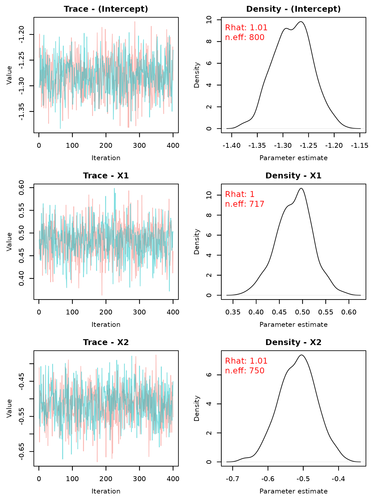
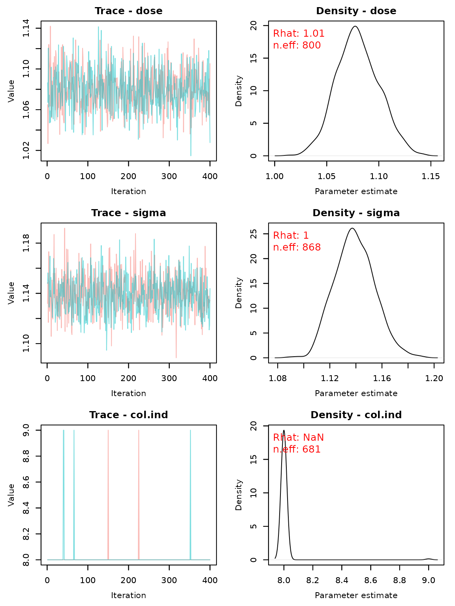
Logistic regression
To fit a logistic regression model, the syntax is very similar.
However, ameras offers three functional forms for modeling
the exposure-outcome relationship. Here, we will illustrate the standard
exponential relationship model="EXP". For more information,
see the vignette Relative risk
models.
First, we fit models including a quadratic exposure term by setting
deg=2.
set.seed(33521)
fit.ameras.logreg <- ameras(Y.binomial~dose(V1:V10, deg=2, model="EXP")+X1+X2,
data=data, family="binomial",
methods=c("RC", "ERC", "MCML", "FMA", "BMA"),
niter.BMA = 5000, nburnin.BMA = 1000)
#> Note: BMA may require extensive computation time
#> Fitting RC
#> Fitting ERC
#> Fitting MCML
#> Fitting FMA
#> Fitting BMA
#> Defining model
#> Building model
#> Setting data and initial values
#> Running calculate on model
#> [Note] Any error reports that follow may simply reflect missing values in model variables.
#> Checking model sizes and dimensions
#> [Note] This model is not fully initialized. This is not an error.
#> To see which variables are not initialized, use model$initializeInfo().
#> For more information on model initialization, see help(modelInitialization).
#> Compiling
#> [Note] This may take a minute.
#> [Note] Use 'showCompilerOutput = TRUE' to see C++ compilation details.
#> Compiling
#> [Note] This may take a minute.
#> [Note] Use 'showCompilerOutput = TRUE' to see C++ compilation details.
#> running chain 1...
#> |-------------|-------------|-------------|-------------|
#> |-------------------------------------------------------|
#> running chain 2...
#> |-------------|-------------|-------------|-------------|
#> |-------------------------------------------------------|
#> Warning in ameras.bma(family = family, dosevars = dosevars, data = data, :
#> WARNING: Potential problems with MCMC convergence, consider using longer chains
summary(fit.ameras.logreg)
#> Call:
#> ameras(formula = Y.binomial ~ dose(V1:V10, deg = 2, model = "EXP") +
#> X1 + X2, data = data, family = "binomial", methods = c("RC",
#> "ERC", "MCML", "FMA", "BMA"), nburnin.BMA = 1000, niter.BMA = 5000)
#>
#> Total run time: 148.7 seconds
#>
#> Runtime in seconds by method:
#>
#> Method Runtime
#> RC 0.3
#> ERC 91.2
#> MCML 1.1
#> FMA 2.7
#> BMA 53.4
#>
#> Summary of coefficients by method:
#>
#> Method Term Estimate SE Rhat n.eff
#> RC (Intercept) -0.94461 0.08409 NA NA
#> RC X1 0.44552 0.07667 NA NA
#> RC X2 -0.33376 0.09601 NA NA
#> RC dose 0.37904 0.10388 NA NA
#> RC dose_squared 0.01943 0.02750 NA NA
#> ERC (Intercept) -0.93189 0.08533 NA NA
#> ERC X1 0.44998 0.07678 NA NA
#> ERC X2 -0.33924 0.09614 NA NA
#> ERC dose 0.33858 0.10745 NA NA
#> ERC dose_squared 0.03528 0.02841 NA NA
#> MCML (Intercept) -0.91147 0.08356 NA NA
#> MCML X1 0.44619 0.07674 NA NA
#> MCML X2 -0.34431 0.09625 NA NA
#> MCML dose 0.31654 0.10412 NA NA
#> MCML dose_squared 0.03800 0.02774 NA NA
#> FMA (Intercept) -0.91244 0.08386 NA NA
#> FMA X1 0.44619 0.07686 NA NA
#> FMA X2 -0.34400 0.09627 NA NA
#> FMA dose 0.31871 0.10523 NA NA
#> FMA dose_squared 0.03735 0.02816 NA NA
#> BMA (Intercept) -0.90779 0.08101 1.03 214.00
#> BMA X1 0.44552 0.07775 1.01 370.00
#> BMA X2 -0.34361 0.09652 1.00 1242.00
#> BMA dose 0.30658 0.09894 1.08 92.00
#> BMA dose_squared 0.04134 0.02564 1.11 105.00
#>
#> Note: confidence intervals not yet computed. Use confint() to add them.
coef(fit.ameras.logreg)
#> RC ERC MCML FMA BMA
#> (Intercept) -0.94461327 -0.93188863 -0.91146831 -0.91243544 -0.90778810
#> X1 0.44552273 0.44997904 0.44619209 0.44619391 0.44552058
#> X2 -0.33375991 -0.33923955 -0.34430935 -0.34400234 -0.34360534
#> dose 0.37904346 0.33857980 0.31654277 0.31870705 0.30657532
#> dose_squared 0.01943381 0.03528262 0.03799845 0.03735107 0.04134337
traceplot(fit.ameras.logreg)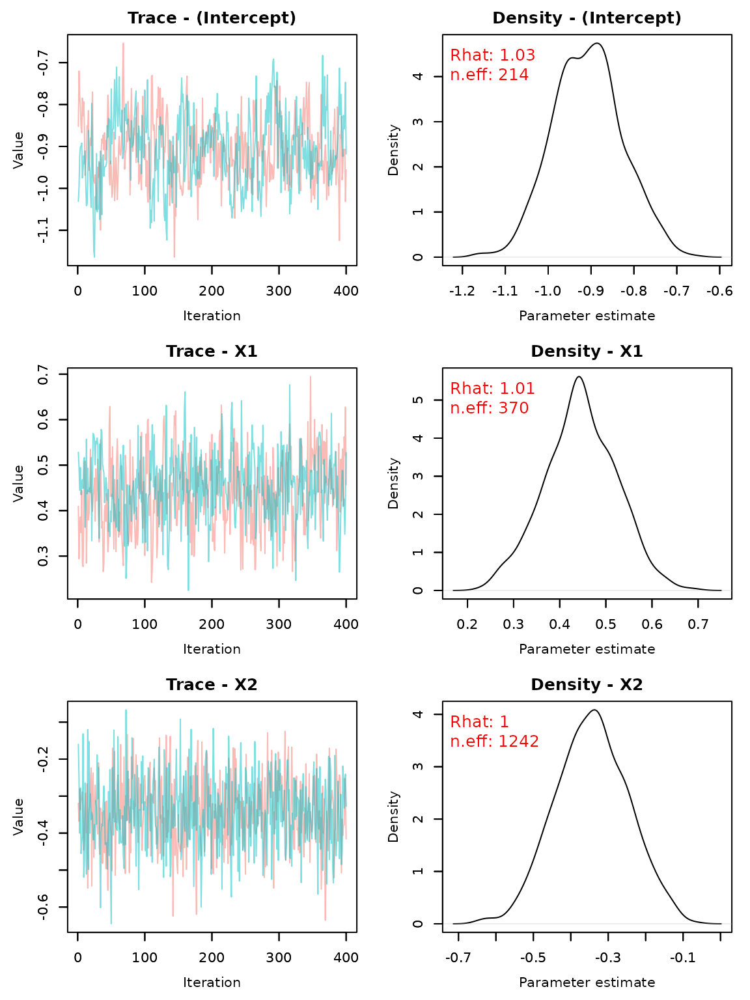

Without the quadratic term (deg=1):
set.seed(3521216)
fit.ameras.logreg.lin <- ameras(Y.binomial~dose(V1:V10, deg=1, model="EXP")+X1+X2,
data=data, family="binomial",
methods=c("RC", "ERC", "MCML", "FMA", "BMA"),
niter.BMA = 5000, nburnin.BMA = 1000)
#> Note: BMA may require extensive computation time
#> Fitting RC
#> Fitting ERC
#> Fitting MCML
#> Fitting FMA
#> Fitting BMA
#> Defining model
#> Building model
#> Setting data and initial values
#> Running calculate on model
#> [Note] Any error reports that follow may simply reflect missing values in model variables.
#> Checking model sizes and dimensions
#> [Note] This model is not fully initialized. This is not an error.
#> To see which variables are not initialized, use model$initializeInfo().
#> For more information on model initialization, see help(modelInitialization).
#> Compiling
#> [Note] This may take a minute.
#> [Note] Use 'showCompilerOutput = TRUE' to see C++ compilation details.
#> Compiling
#> [Note] This may take a minute.
#> [Note] Use 'showCompilerOutput = TRUE' to see C++ compilation details.
#> running chain 1...
#> |-------------|-------------|-------------|-------------|
#> |-------------------------------------------------------|
#> running chain 2...
#> |-------------|-------------|-------------|-------------|
#> |-------------------------------------------------------|
summary(fit.ameras.logreg.lin)
#> Call:
#> ameras(formula = Y.binomial ~ dose(V1:V10, deg = 1, model = "EXP") +
#> X1 + X2, data = data, family = "binomial", methods = c("RC",
#> "ERC", "MCML", "FMA", "BMA"), nburnin.BMA = 1000, niter.BMA = 5000)
#>
#> Total run time: 128.6 seconds
#>
#> Runtime in seconds by method:
#>
#> Method Runtime
#> RC 0.2
#> ERC 77.0
#> MCML 0.7
#> FMA 1.5
#> BMA 49.2
#>
#> Summary of coefficients by method:
#>
#> Method Term Estimate SE Rhat n.eff
#> RC (Intercept) -0.9760 0.07190 NA NA
#> RC X1 0.4460 0.07667 NA NA
#> RC X2 -0.3359 0.09596 NA NA
#> RC dose 0.4471 0.04101 NA NA
#> ERC (Intercept) -0.9898 0.07216 NA NA
#> ERC X1 0.4533 0.07667 NA NA
#> ERC X2 -0.3437 0.09609 NA NA
#> ERC dose 0.4632 0.04086 NA NA
#> MCML (Intercept) -0.9725 0.07154 NA NA
#> MCML X1 0.4469 0.07674 NA NA
#> MCML X2 -0.3467 0.09618 NA NA
#> MCML dose 0.4498 0.04105 NA NA
#> FMA (Intercept) -0.9725 0.07138 NA NA
#> FMA X1 0.4472 0.07664 NA NA
#> FMA X2 -0.3465 0.09602 NA NA
#> FMA dose 0.4497 0.04101 NA NA
#> BMA (Intercept) -0.9791 0.06869 1.03 386.00
#> BMA X1 0.4555 0.07669 1.00 482.00
#> BMA X2 -0.3486 0.09589 1.02 882.00
#> BMA dose 0.4523 0.04042 1.03 518.00
#>
#> Note: confidence intervals not yet computed. Use confint() to add them.
coef(fit.ameras.logreg.lin)
#> RC ERC MCML FMA BMA
#> (Intercept) -0.9759817 -0.9897555 -0.9724854 -0.9725462 -0.9791394
#> X1 0.4459778 0.4533083 0.4468997 0.4471557 0.4555060
#> X2 -0.3358992 -0.3436867 -0.3467298 -0.3465319 -0.3485601
#> dose 0.4471346 0.4632116 0.4497526 0.4497072 0.4522620
traceplot(fit.ameras.logreg.lin)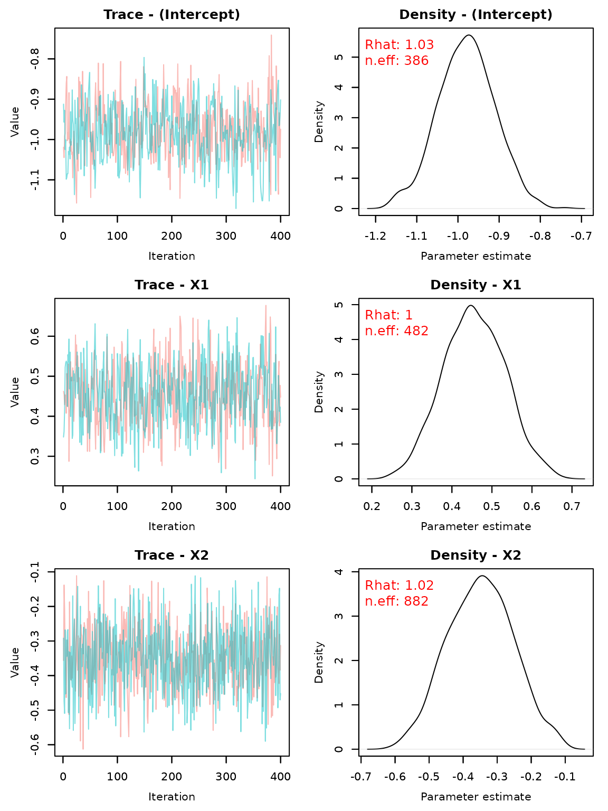

Poisson regression
For Poisson regression, an offset can be optionally used by including
an offset term in the formula, e.g.,
Y~dose(V1:V10)~X1+offset(PYR). Here, we show models without
using an offset, first including a quadratic exposure term:
set.seed(332101)
fit.ameras.poisson <- ameras(Y.poisson~dose(V1:V10, deg=2, model="EXP")+X1+X2,
data=data, family="poisson",
methods=c("RC", "ERC", "MCML", "FMA", "BMA"),
niter.BMA = 5000, nburnin.BMA = 1000)
#> Note: BMA may require extensive computation time
#> Fitting RC
#> Fitting ERC
#> Fitting MCML
#> Fitting FMA
#> Fitting BMA
#> Defining model
#> Building model
#> Setting data and initial values
#> Running calculate on model
#> [Note] Any error reports that follow may simply reflect missing values in model variables.
#> Checking model sizes and dimensions
#> [Note] This model is not fully initialized. This is not an error.
#> To see which variables are not initialized, use model$initializeInfo().
#> For more information on model initialization, see help(modelInitialization).
#> Compiling
#> [Note] This may take a minute.
#> [Note] Use 'showCompilerOutput = TRUE' to see C++ compilation details.
#> Compiling
#> [Note] This may take a minute.
#> [Note] Use 'showCompilerOutput = TRUE' to see C++ compilation details.
#> running chain 1...
#> |-------------|-------------|-------------|-------------|
#> |-------------------------------------------------------|
#> running chain 2...
#> warning: logProb of data node Y[247]: logProb less than -1e12.
#> warning: logProb of data node Y[676]: logProb less than -1e12.
#> warning: logProb of data node Y[833]: logProb less than -1e12.
#> warning: logProb of data node Y[1635]: logProb less than -1e12.
#> |-------------|-------------|-------------|-------------|
#> |-------------------------------------------------------|
summary(fit.ameras.poisson)
#> Call:
#> ameras(formula = Y.poisson ~ dose(V1:V10, deg = 2, model = "EXP") +
#> X1 + X2, data = data, family = "poisson", methods = c("RC",
#> "ERC", "MCML", "FMA", "BMA"), nburnin.BMA = 1000, niter.BMA = 5000)
#>
#> Total run time: 67.7 seconds
#>
#> Runtime in seconds by method:
#>
#> Method Runtime
#> RC 0.3
#> ERC 1.1
#> MCML 1.3
#> FMA 3.3
#> BMA 61.7
#>
#> Summary of coefficients by method:
#>
#> Method Term Estimate SE Rhat n.eff
#> RC (Intercept) -1.09456 0.048655 NA NA
#> RC X1 0.49070 0.041922 NA NA
#> RC X2 -0.37625 0.055638 NA NA
#> RC dose 0.61976 0.040375 NA NA
#> RC dose_squared -0.03849 0.007566 NA NA
#> ERC (Intercept) -1.09068 0.048474 NA NA
#> ERC X1 0.49180 0.042008 NA NA
#> ERC X2 -0.37855 0.055639 NA NA
#> ERC dose 0.61138 0.039328 NA NA
#> ERC dose_squared -0.03626 0.007177 NA NA
#> MCML (Intercept) -1.07519 0.046954 NA NA
#> MCML X1 0.49897 0.041918 NA NA
#> MCML X2 -0.37711 0.055643 NA NA
#> MCML dose 0.60089 0.034218 NA NA
#> MCML dose_squared -0.03644 0.005719 NA NA
#> FMA (Intercept) -1.07542 0.047056 NA NA
#> FMA X1 0.49896 0.041800 NA NA
#> FMA X2 -0.37716 0.055479 NA NA
#> FMA dose 0.60138 0.035163 NA NA
#> FMA dose_squared -0.03656 0.005998 NA NA
#> BMA (Intercept) -1.07944 0.044741 1.02 215.00
#> BMA X1 0.49801 0.039956 1.03 435.00
#> BMA X2 -0.38167 0.055527 1.00 800.00
#> BMA dose 0.60805 0.035663 1.03 87.00
#> BMA dose_squared -0.03798 0.006215 1.03 79.00
#>
#> Note: confidence intervals not yet computed. Use confint() to add them.
coef(fit.ameras.poisson)
#> RC ERC MCML FMA BMA
#> (Intercept) -1.09455980 -1.09068092 -1.07519346 -1.07541780 -1.0794372
#> X1 0.49070108 0.49179875 0.49897425 0.49895993 0.4980120
#> X2 -0.37624508 -0.37854805 -0.37711401 -0.37715581 -0.3816682
#> dose 0.61975742 0.61138406 0.60089474 0.60137955 0.6080481
#> dose_squared -0.03849039 -0.03626348 -0.03643505 -0.03656317 -0.0379750
traceplot(fit.ameras.poisson)
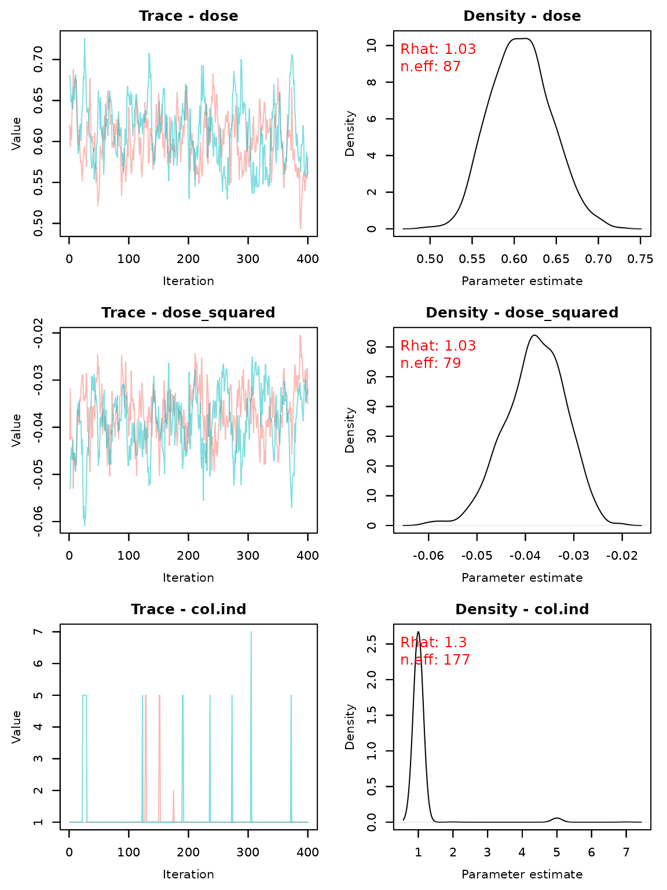
Without the quadratic term (deg=1):
set.seed(24252)
fit.ameras.poisson.lin <- ameras(Y.poisson~dose(V1:V10, deg=1, model="EXP")+X1+X2,
data=data, family="poisson",
methods=c("RC", "ERC", "MCML", "FMA", "BMA"),
niter.BMA = 5000, nburnin.BMA = 1000)
#> Note: BMA may require extensive computation time
#> Fitting RC
#> Fitting ERC
#> Fitting MCML
#> Fitting FMA
#> Fitting BMA
#> Defining model
#> Building model
#> Setting data and initial values
#> Running calculate on model
#> [Note] Any error reports that follow may simply reflect missing values in model variables.
#> Checking model sizes and dimensions
#> [Note] This model is not fully initialized. This is not an error.
#> To see which variables are not initialized, use model$initializeInfo().
#> For more information on model initialization, see help(modelInitialization).
#> Compiling
#> [Note] This may take a minute.
#> [Note] Use 'showCompilerOutput = TRUE' to see C++ compilation details.
#> Compiling
#> [Note] This may take a minute.
#> [Note] Use 'showCompilerOutput = TRUE' to see C++ compilation details.
#> running chain 1...
#> |-------------|-------------|-------------|-------------|
#> |-------------------------------------------------------|
#> running chain 2...
#> |-------------|-------------|-------------|-------------|
#> |-------------------------------------------------------|
summary(fit.ameras.poisson.lin)
#> Call:
#> ameras(formula = Y.poisson ~ dose(V1:V10, deg = 1, model = "EXP") +
#> X1 + X2, data = data, family = "poisson", methods = c("RC",
#> "ERC", "MCML", "FMA", "BMA"), nburnin.BMA = 1000, niter.BMA = 5000)
#>
#> Total run time: 63.1 seconds
#>
#> Runtime in seconds by method:
#>
#> Method Runtime
#> RC 0.2
#> ERC 1.0
#> MCML 0.7
#> FMA 2.0
#> BMA 59.2
#>
#> Summary of coefficients by method:
#>
#> Method Term Estimate SE Rhat n.eff
#> RC (Intercept) -0.9650 0.04127 NA NA
#> RC X1 0.5054 0.04195 NA NA
#> RC X2 -0.3640 0.05560 NA NA
#> RC dose 0.4204 0.01346 NA NA
#> ERC (Intercept) -0.9667 0.04134 NA NA
#> ERC X1 0.5049 0.04202 NA NA
#> ERC X2 -0.3667 0.05559 NA NA
#> ERC dose 0.4222 0.01361 NA NA
#> MCML (Intercept) -0.9173 0.04048 NA NA
#> MCML X1 0.5129 0.04231 NA NA
#> MCML X2 -0.3579 0.05582 NA NA
#> MCML dose 0.3823 0.01231 NA NA
#> FMA (Intercept) -0.9174 0.04044 NA NA
#> FMA X1 0.5121 0.04257 NA NA
#> FMA X2 -0.3584 0.05587 NA NA
#> FMA dose 0.3826 0.01255 NA NA
#> BMA (Intercept) -0.9180 0.04041 1.00 301.00
#> BMA X1 0.5100 0.04121 1.01 364.00
#> BMA X2 -0.3581 0.05584 1.00 800.00
#> BMA dose 0.3833 0.01343 1.01 371.00
#>
#> Note: confidence intervals not yet computed. Use confint() to add them.
coef(fit.ameras.poisson.lin)
#> RC ERC MCML FMA BMA
#> (Intercept) -0.9649529 -0.9666735 -0.9173445 -0.9173785 -0.9179930
#> X1 0.5054270 0.5049256 0.5129102 0.5120519 0.5099994
#> X2 -0.3639707 -0.3666592 -0.3579466 -0.3583942 -0.3581445
#> dose 0.4204226 0.4222084 0.3822723 0.3826304 0.3833150
traceplot(fit.ameras.poisson.lin)

Proportional hazards regression
Proportional hazards regression uses syntax similar to the
survival package, with models specified using formulas with
Surv(exit, status) or
Surv(entry, exit, status) on the left hand side. Note that
BMA fits a piecewise constant baseline hazard h0 as the
proportional hazards model is not directly supported. By default, the
observed time interval is divided into 10 intervals using quantiles of
the observed event times among cases. This number of such intervals can
be specified through the prophaz.numints.BMA argument. The
BMA output contains the prophaz.numints.BMA+1 cutpoints
defining the intervals in addition to h0.
Again, we first fit models including a quadratic exposure term by
setting deg=2.
set.seed(332120000)
fit.ameras.prophaz <- ameras(Surv(time, status)~
dose(V1:V10, deg=2, model="EXP")+X1+X2,
data=data, family="prophaz",
methods=c("RC", "ERC", "MCML", "FMA", "BMA"),
niter.BMA = 5000, nburnin.BMA = 1000)
#> Note: BMA may require extensive computation time
#> Fitting RC
#> Fitting ERC
#> Warning in ameras.rc(family = family, dosevars = dosevars, data = data, :
#> WARNING: Hessian was not invertible or inverse was not positive definite,
#> variance matrix could not be obtained
#> Fitting MCML
#> Fitting FMA
#> Fitting BMA
#> Defining model
#> Building model
#> Setting data and initial values
#> Running calculate on model
#> [Note] Any error reports that follow may simply reflect missing values in model variables.
#> Checking model sizes and dimensions
#> [Note] This model is not fully initialized. This is not an error.
#> To see which variables are not initialized, use model$initializeInfo().
#> For more information on model initialization, see help(modelInitialization).
#> Compiling
#> [Note] This may take a minute.
#> [Note] Use 'showCompilerOutput = TRUE' to see C++ compilation details.
#> Compiling
#> [Note] This may take a minute.
#> [Note] Use 'showCompilerOutput = TRUE' to see C++ compilation details.
#> running chain 1...
#> warning: logProb of data node zeros[7]: logProb less than -1e12.
#> warning: logProb of data node zeros[17]: logProb less than -1e12.
#> warning: logProb of data node zeros[41]: logProb less than -1e12.
#> warning: logProb of data node zeros[46]: logProb less than -1e12.
#> warning: logProb of data node zeros[52]: logProb less than -1e12.
#> warning: logProb of data node zeros[58]: logProb less than -1e12.
#> warning: logProb of data node zeros[71]: logProb less than -1e12.
#> warning: logProb of data node zeros[157]: logProb less than -1e12.
#> warning: logProb of data node zeros[166]: logProb less than -1e12.
#> warning: logProb of data node zeros[175]: logProb less than -1e12.
#> warning: logProb of data node zeros[178]: logProb less than -1e12.
#> warning: logProb of data node zeros[212]: logProb less than -1e12.
#> warning: logProb of data node zeros[238]: logProb less than -1e12.
#> warning: logProb of data node zeros[243]: logProb less than -1e12.
#> warning: logProb of data node zeros[246]: logProb less than -1e12.
#> warning: logProb of data node zeros[247]: logProb less than -1e12.
#> warning: logProb of data node zeros[260]: logProb less than -1e12.
#> warning: logProb of data node zeros[261]: logProb less than -1e12.
#> warning: logProb of data node zeros[263]: logProb less than -1e12.
#> warning: logProb of data node zeros[267]: logProb less than -1e12.
#> warning: logProb of data node zeros[270]: logProb less than -1e12.
#> warning: logProb of data node zeros[278]: logProb less than -1e12.
#> warning: logProb of data node zeros[311]: logProb less than -1e12.
#> warning: logProb of data node zeros[335]: logProb less than -1e12.
#> warning: logProb of data node zeros[341]: logProb less than -1e12.
#> warning: logProb of data node zeros[348]: logProb less than -1e12.
#> warning: logProb of data node zeros[352]: logProb less than -1e12.
#> warning: logProb of data node zeros[370]: logProb less than -1e12.
#> warning: logProb of data node zeros[372]: logProb less than -1e12.
#> warning: logProb of data node zeros[378]: logProb less than -1e12.
#> warning: logProb of data node zeros[386]: logProb less than -1e12.
#> warning: logProb of data node zeros[420]: logProb less than -1e12.
#> warning: logProb of data node zeros[432]: logProb less than -1e12.
#> warning: logProb of data node zeros[433]: logProb less than -1e12.
#> warning: logProb of data node zeros[438]: logProb less than -1e12.
#> warning: logProb of data node zeros[440]: logProb less than -1e12.
#> warning: logProb of data node zeros[449]: logProb less than -1e12.
#> warning: logProb of data node zeros[450]: logProb less than -1e12.
#> warning: logProb of data node zeros[458]: logProb less than -1e12.
#> warning: logProb of data node zeros[508]: logProb less than -1e12.
#> warning: logProb of data node zeros[509]: logProb less than -1e12.
#> warning: logProb of data node zeros[528]: logProb less than -1e12.
#> warning: logProb of data node zeros[535]: logProb less than -1e12.
#> warning: logProb of data node zeros[546]: logProb less than -1e12.
#> warning: logProb of data node zeros[547]: logProb less than -1e12.
#> warning: logProb of data node zeros[552]: logProb less than -1e12.
#> warning: logProb of data node zeros[554]: logProb less than -1e12.
#> warning: logProb of data node zeros[577]: logProb less than -1e12.
#> warning: logProb of data node zeros[608]: logProb less than -1e12.
#> warning: logProb of data node zeros[611]: logProb less than -1e12.
#> warning: logProb of data node zeros[620]: logProb less than -1e12.
#> warning: logProb of data node zeros[627]: logProb less than -1e12.
#> warning: logProb of data node zeros[631]: logProb less than -1e12.
#> warning: logProb of data node zeros[656]: logProb less than -1e12.
#> warning: logProb of data node zeros[661]: logProb less than -1e12.
#> warning: logProb of data node zeros[676]: logProb less than -1e12.
#> warning: logProb of data node zeros[684]: logProb less than -1e12.
#> warning: logProb of data node zeros[698]: logProb less than -1e12.
#> warning: logProb of data node zeros[714]: logProb less than -1e12.
#> warning: logProb of data node zeros[716]: logProb less than -1e12.
#> warning: logProb of data node zeros[727]: logProb less than -1e12.
#> warning: logProb of data node zeros[749]: logProb less than -1e12.
#> warning: logProb of data node zeros[806]: logProb less than -1e12.
#> warning: logProb of data node zeros[809]: logProb less than -1e12.
#> warning: logProb of data node zeros[821]: logProb less than -1e12.
#> warning: logProb of data node zeros[833]: logProb less than -1e12.
#> warning: logProb of data node zeros[839]: logProb less than -1e12.
#> warning: logProb of data node zeros[864]: logProb less than -1e12.
#> warning: logProb of data node zeros[873]: logProb less than -1e12.
#> warning: logProb of data node zeros[910]: logProb less than -1e12.
#> warning: logProb of data node zeros[962]: logProb less than -1e12.
#> warning: logProb of data node zeros[971]: logProb less than -1e12.
#> warning: logProb of data node zeros[1002]: logProb less than -1e12.
#> warning: logProb of data node zeros[1004]: logProb less than -1e12.
#> warning: logProb of data node zeros[1009]: logProb less than -1e12.
#> warning: logProb of data node zeros[1014]: logProb less than -1e12.
#> warning: logProb of data node zeros[1036]: logProb less than -1e12.
#> warning: logProb of data node zeros[1040]: logProb less than -1e12.
#> warning: logProb of data node zeros[1052]: logProb less than -1e12.
#> warning: logProb of data node zeros[1070]: logProb less than -1e12.
#> warning: logProb of data node zeros[1074]: logProb less than -1e12.
#> warning: logProb of data node zeros[1076]: logProb less than -1e12.
#> warning: logProb of data node zeros[1081]: logProb less than -1e12.
#> warning: logProb of data node zeros[1116]: logProb less than -1e12.
#> warning: logProb of data node zeros[1122]: logProb less than -1e12.
#> warning: logProb of data node zeros[1137]: logProb less than -1e12.
#> warning: logProb of data node zeros[1151]: logProb less than -1e12.
#> warning: logProb of data node zeros[1179]: logProb less than -1e12.
#> warning: logProb of data node zeros[1187]: logProb less than -1e12.
#> warning: logProb of data node zeros[1208]: logProb less than -1e12.
#> warning: logProb of data node zeros[1214]: logProb less than -1e12.
#> warning: logProb of data node zeros[1245]: logProb less than -1e12.
#> warning: logProb of data node zeros[1247]: logProb less than -1e12.
#> warning: logProb of data node zeros[1282]: logProb less than -1e12.
#> warning: logProb of data node zeros[1296]: logProb less than -1e12.
#> warning: logProb of data node zeros[1300]: logProb less than -1e12.
#> warning: logProb of data node zeros[1319]: logProb less than -1e12.
#> warning: logProb of data node zeros[1322]: logProb less than -1e12.
#> warning: logProb of data node zeros[1327]: logProb less than -1e12.
#> warning: logProb of data node zeros[1340]: logProb less than -1e12.
#> warning: logProb of data node zeros[1354]: logProb less than -1e12.
#> warning: logProb of data node zeros[1357]: logProb less than -1e12.
#> warning: logProb of data node zeros[1368]: logProb less than -1e12.
#> warning: logProb of data node zeros[1373]: logProb less than -1e12.
#> warning: logProb of data node zeros[1375]: logProb less than -1e12.
#> warning: logProb of data node zeros[1406]: logProb less than -1e12.
#> warning: logProb of data node zeros[1425]: logProb less than -1e12.
#> warning: logProb of data node zeros[1449]: logProb less than -1e12.
#> warning: logProb of data node zeros[1464]: logProb less than -1e12.
#> warning: logProb of data node zeros[1470]: logProb less than -1e12.
#> warning: logProb of data node zeros[1475]: logProb less than -1e12.
#> warning: logProb of data node zeros[1480]: logProb less than -1e12.
#> warning: logProb of data node zeros[1492]: logProb less than -1e12.
#> warning: logProb of data node zeros[1496]: logProb less than -1e12.
#> warning: logProb of data node zeros[1517]: logProb less than -1e12.
#> warning: logProb of data node zeros[1524]: logProb less than -1e12.
#> warning: logProb of data node zeros[1527]: logProb less than -1e12.
#> warning: logProb of data node zeros[1541]: logProb less than -1e12.
#> warning: logProb of data node zeros[1553]: logProb less than -1e12.
#> warning: logProb of data node zeros[1566]: logProb less than -1e12.
#> warning: logProb of data node zeros[1569]: logProb less than -1e12.
#> warning: logProb of data node zeros[1572]: logProb less than -1e12.
#> warning: logProb of data node zeros[1588]: logProb less than -1e12.
#> warning: logProb of data node zeros[1603]: logProb less than -1e12.
#> warning: logProb of data node zeros[1617]: logProb less than -1e12.
#> warning: logProb of data node zeros[1635]: logProb less than -1e12.
#> warning: logProb of data node zeros[1661]: logProb less than -1e12.
#> warning: logProb of data node zeros[1663]: logProb less than -1e12.
#> warning: logProb of data node zeros[1664]: logProb less than -1e12.
#> warning: logProb of data node zeros[1693]: logProb less than -1e12.
#> warning: logProb of data node zeros[1716]: logProb less than -1e12.
#> warning: logProb of data node zeros[1755]: logProb less than -1e12.
#> warning: logProb of data node zeros[1768]: logProb less than -1e12.
#> warning: logProb of data node zeros[1783]: logProb less than -1e12.
#> warning: logProb of data node zeros[1796]: logProb less than -1e12.
#> warning: logProb of data node zeros[1807]: logProb less than -1e12.
#> warning: logProb of data node zeros[1818]: logProb less than -1e12.
#> warning: logProb of data node zeros[1836]: logProb less than -1e12.
#> warning: logProb of data node zeros[1838]: logProb less than -1e12.
#> warning: logProb of data node zeros[1851]: logProb less than -1e12.
#> warning: logProb of data node zeros[1888]: logProb less than -1e12.
#> warning: logProb of data node zeros[1900]: logProb less than -1e12.
#> warning: logProb of data node zeros[1921]: logProb less than -1e12.
#> warning: logProb of data node zeros[1930]: logProb less than -1e12.
#> warning: logProb of data node zeros[1948]: logProb less than -1e12.
#> warning: logProb of data node zeros[1968]: logProb less than -1e12.
#> warning: logProb of data node zeros[1971]: logProb less than -1e12.
#> warning: logProb of data node zeros[1972]: logProb less than -1e12.
#> warning: logProb of data node zeros[1979]: logProb less than -1e12.
#> warning: logProb of data node zeros[1983]: logProb less than -1e12.
#> warning: logProb of data node zeros[1991]: logProb less than -1e12.
#> warning: logProb of data node zeros[1997]: logProb less than -1e12.
#> warning: logProb of data node zeros[2021]: logProb less than -1e12.
#> warning: logProb of data node zeros[2035]: logProb less than -1e12.
#> warning: logProb of data node zeros[2054]: logProb less than -1e12.
#> warning: logProb of data node zeros[2087]: logProb less than -1e12.
#> warning: logProb of data node zeros[2089]: logProb less than -1e12.
#> warning: logProb of data node zeros[2101]: logProb less than -1e12.
#> warning: logProb of data node zeros[2112]: logProb less than -1e12.
#> warning: logProb of data node zeros[2129]: logProb less than -1e12.
#> warning: logProb of data node zeros[2131]: logProb less than -1e12.
#> warning: logProb of data node zeros[2134]: logProb less than -1e12.
#> warning: logProb of data node zeros[2156]: logProb less than -1e12.
#> warning: logProb of data node zeros[2198]: logProb less than -1e12.
#> warning: logProb of data node zeros[2208]: logProb less than -1e12.
#> warning: logProb of data node zeros[2216]: logProb less than -1e12.
#> warning: logProb of data node zeros[2227]: logProb less than -1e12.
#> warning: logProb of data node zeros[2237]: logProb less than -1e12.
#> warning: logProb of data node zeros[2239]: logProb less than -1e12.
#> warning: logProb of data node zeros[2255]: logProb less than -1e12.
#> warning: logProb of data node zeros[2294]: logProb less than -1e12.
#> warning: logProb of data node zeros[2312]: logProb less than -1e12.
#> warning: logProb of data node zeros[2338]: logProb less than -1e12.
#> warning: logProb of data node zeros[2339]: logProb less than -1e12.
#> warning: logProb of data node zeros[2360]: logProb less than -1e12.
#> warning: logProb of data node zeros[2368]: logProb less than -1e12.
#> warning: logProb of data node zeros[2373]: logProb less than -1e12.
#> warning: logProb of data node zeros[2395]: logProb less than -1e12.
#> warning: logProb of data node zeros[2398]: logProb less than -1e12.
#> warning: logProb of data node zeros[2407]: logProb less than -1e12.
#> warning: logProb of data node zeros[2409]: logProb less than -1e12.
#> warning: logProb of data node zeros[2413]: logProb less than -1e12.
#> warning: logProb of data node zeros[2422]: logProb less than -1e12.
#> warning: logProb of data node zeros[2444]: logProb less than -1e12.
#> warning: logProb of data node zeros[2452]: logProb less than -1e12.
#> warning: logProb of data node zeros[2463]: logProb less than -1e12.
#> warning: logProb of data node zeros[2475]: logProb less than -1e12.
#> warning: logProb of data node zeros[2478]: logProb less than -1e12.
#> warning: logProb of data node zeros[2490]: logProb less than -1e12.
#> warning: logProb of data node zeros[2495]: logProb less than -1e12.
#> warning: logProb of data node zeros[2524]: logProb less than -1e12.
#> warning: logProb of data node zeros[2530]: logProb less than -1e12.
#> warning: logProb of data node zeros[2559]: logProb less than -1e12.
#> warning: logProb of data node zeros[2562]: logProb less than -1e12.
#> warning: logProb of data node zeros[2573]: logProb less than -1e12.
#> warning: logProb of data node zeros[2605]: logProb less than -1e12.
#> warning: logProb of data node zeros[2617]: logProb less than -1e12.
#> warning: logProb of data node zeros[2655]: logProb less than -1e12.
#> warning: logProb of data node zeros[2665]: logProb less than -1e12.
#> warning: logProb of data node zeros[2671]: logProb less than -1e12.
#> warning: logProb of data node zeros[2684]: logProb less than -1e12.
#> warning: logProb of data node zeros[2686]: logProb less than -1e12.
#> warning: logProb of data node zeros[2688]: logProb less than -1e12.
#> warning: logProb of data node zeros[2694]: logProb less than -1e12.
#> warning: logProb of data node zeros[2715]: logProb less than -1e12.
#> warning: logProb of data node zeros[2723]: logProb less than -1e12.
#> warning: logProb of data node zeros[2728]: logProb less than -1e12.
#> warning: logProb of data node zeros[2733]: logProb less than -1e12.
#> warning: logProb of data node zeros[2743]: logProb less than -1e12.
#> warning: logProb of data node zeros[2747]: logProb less than -1e12.
#> warning: logProb of data node zeros[2757]: logProb less than -1e12.
#> warning: logProb of data node zeros[2771]: logProb less than -1e12.
#> warning: logProb of data node zeros[2774]: logProb less than -1e12.
#> warning: logProb of data node zeros[2787]: logProb less than -1e12.
#> warning: logProb of data node zeros[2807]: logProb less than -1e12.
#> warning: logProb of data node zeros[2813]: logProb less than -1e12.
#> warning: logProb of data node zeros[2824]: logProb less than -1e12.
#> warning: logProb of data node zeros[2838]: logProb less than -1e12.
#> warning: logProb of data node zeros[2839]: logProb less than -1e12.
#> warning: logProb of data node zeros[2907]: logProb less than -1e12.
#> warning: logProb of data node zeros[2909]: logProb less than -1e12.
#> warning: logProb of data node zeros[2915]: logProb less than -1e12.
#> warning: logProb of data node zeros[2937]: logProb less than -1e12.
#> warning: logProb of data node zeros[2945]: logProb less than -1e12.
#> warning: logProb of data node zeros[2968]: logProb less than -1e12.
#> warning: logProb of data node zeros[2971]: logProb less than -1e12.
#> warning: logProb of data node zeros[2993]: logProb less than -1e12.
#> warning: logProb of data node zeros[2998]: logProb less than -1e12.
#> |-------------|-------------|-------------|-------------|
#> |-------------------------------------------------------|
#> running chain 2...
#> |-------------|-------------|-------------|-------------|
#> |-------------------------------------------------------|
summary(fit.ameras.prophaz)
#> Call:
#> ameras(formula = Surv(time, status) ~ dose(V1:V10, deg = 2, model = "EXP") +
#> X1 + X2, data = data, family = "prophaz", methods = c("RC",
#> "ERC", "MCML", "FMA", "BMA"), nburnin.BMA = 1000, niter.BMA = 5000)
#>
#> Total run time: 802.9 seconds
#>
#> Runtime in seconds by method:
#>
#> Method Runtime
#> RC 0.3
#> ERC 701.1
#> MCML 0.7
#> FMA 2.3
#> BMA 98.5
#>
#> Summary of coefficients by method:
#>
#> Method Term Estimate SE Rhat n.eff
#> RC X1 0.629674 0.08485 NA NA
#> RC X2 -0.423116 0.11150 NA NA
#> RC dose 0.587614 0.08915 NA NA
#> RC dose_squared -0.033682 0.01807 NA NA
#> ERC X1 0.636755 NA NA NA
#> ERC X2 -0.422042 NA NA NA
#> ERC dose 0.295488 NA NA NA
#> ERC dose_squared -0.003357 NA NA NA
#> MCML X1 0.629162 0.08518 NA NA
#> MCML X2 -0.425156 0.11196 NA NA
#> MCML dose 0.590217 0.08046 NA NA
#> MCML dose_squared -0.038038 0.01523 NA NA
#> FMA X1 0.629250 0.08557 NA NA
#> FMA X2 -0.425507 0.11190 NA NA
#> FMA dose 0.589537 0.08127 NA NA
#> FMA dose_squared -0.037872 0.01546 NA NA
#> BMA X1 0.635157 0.08523 1.00 397.00
#> BMA X2 -0.423897 0.11063 1.01 747.00
#> BMA dose 0.617073 0.08181 1.01 101.00
#> BMA dose_squared -0.042851 0.01554 1.01 116.00
#> BMA h0[1] 0.316373 0.05147 1.00 384.00
#> BMA h0[2] 0.343831 0.05275 1.00 394.00
#> BMA h0[3] 0.262707 0.04153 1.00 281.00
#> BMA h0[4] 0.294011 0.04621 1.00 410.00
#> BMA h0[5] 0.314660 0.04963 1.01 362.00
#> BMA h0[6] 0.396503 0.06335 1.00 411.00
#> BMA h0[7] 0.269226 0.03952 1.00 373.00
#> BMA h0[8] 0.309864 0.04606 1.00 326.00
#> BMA h0[9] 0.268182 0.04019 1.00 398.00
#> BMA h0[10] 0.304145 0.04624 1.01 367.00
#>
#> Note: confidence intervals not yet computed. Use confint() to add them.
coef(fit.ameras.prophaz)
#> RC ERC MCML FMA BMA
#> X1 0.62967434 0.636754979 0.62916199 0.62925032 0.63515662
#> X2 -0.42311583 -0.422041734 -0.42515576 -0.42550683 -0.42389658
#> dose 0.58761408 0.295487972 0.59021691 0.58953694 0.61707317
#> dose_squared -0.03368205 -0.003356734 -0.03803829 -0.03787174 -0.04285062
#> h0[1] NA NA NA NA 0.31637277
#> h0[2] NA NA NA NA 0.34383087
#> h0[3] NA NA NA NA 0.26270690
#> h0[4] NA NA NA NA 0.29401059
#> h0[5] NA NA NA NA 0.31466013
#> h0[6] NA NA NA NA 0.39650271
#> h0[7] NA NA NA NA 0.26922630
#> h0[8] NA NA NA NA 0.30986447
#> h0[9] NA NA NA NA 0.26818217
#> h0[10] NA NA NA NA 0.30414532The BMA output now contains the intervals with piecewise constant
baseline hazards, corresponding to the estimates h0:
fit.ameras.prophaz$BMA$prophaz.timepoints
#> NULL
traceplot(fit.ameras.prophaz)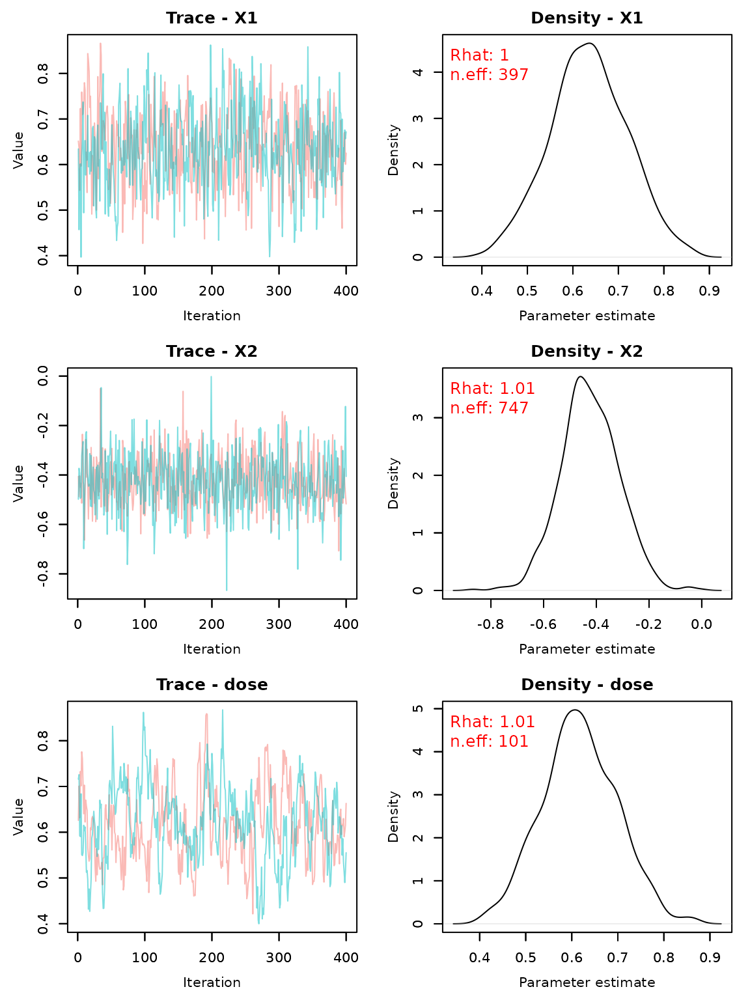
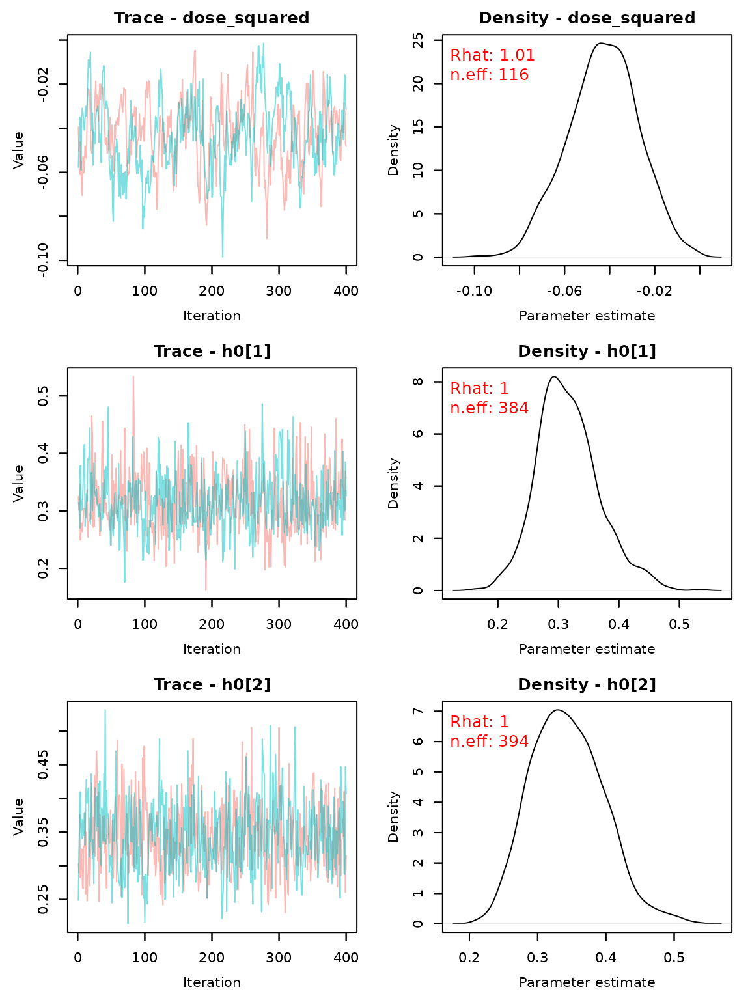
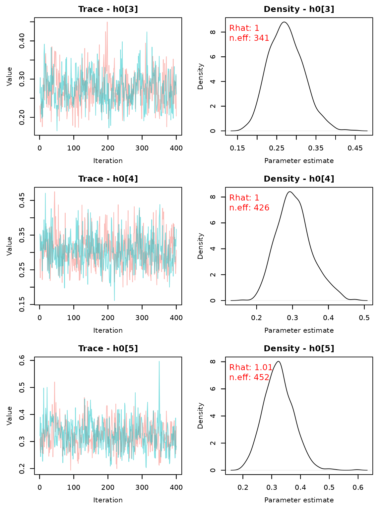

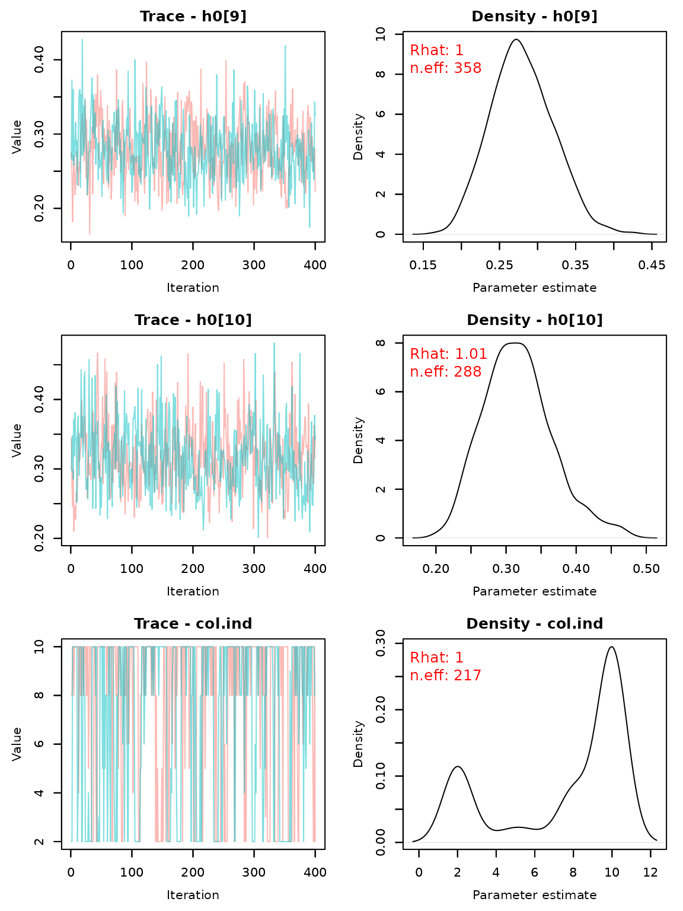
Without the quadratic term (deg=1):
set.seed(24978252)
fit.ameras.prophaz.lin <- ameras(Surv(time, status)~
dose(V1:V10, deg=1, model="EXP")+X1+X2,
data=data, family="prophaz",
methods=c("RC", "ERC", "MCML", "FMA", "BMA"),
niter.BMA = 5000, nburnin.BMA = 1000)
#> Note: BMA may require extensive computation time
#> Fitting RC
#> Fitting ERC
#> Warning in ameras.rc(family = family, dosevars = dosevars, data = data, :
#> WARNING: Hessian was not invertible or inverse was not positive definite,
#> variance matrix could not be obtained
#> Fitting MCML
#> Fitting FMA
#> Fitting BMA
#> Defining model
#> Building model
#> Setting data and initial values
#> Running calculate on model
#> [Note] Any error reports that follow may simply reflect missing values in model variables.
#> Checking model sizes and dimensions
#> [Note] This model is not fully initialized. This is not an error.
#> To see which variables are not initialized, use model$initializeInfo().
#> For more information on model initialization, see help(modelInitialization).
#> Compiling
#> [Note] This may take a minute.
#> [Note] Use 'showCompilerOutput = TRUE' to see C++ compilation details.
#> Compiling
#> [Note] This may take a minute.
#> [Note] Use 'showCompilerOutput = TRUE' to see C++ compilation details.
#> running chain 1...
#> |-------------|-------------|-------------|-------------|
#> |-------------------------------------------------------|
#> running chain 2...
#> |-------------|-------------|-------------|-------------|
#> |-------------------------------------------------------|
summary(fit.ameras.prophaz.lin)
#> Call:
#> ameras(formula = Surv(time, status) ~ dose(V1:V10, deg = 1, model = "EXP") +
#> X1 + X2, data = data, family = "prophaz", methods = c("RC",
#> "ERC", "MCML", "FMA", "BMA"), nburnin.BMA = 1000, niter.BMA = 5000)
#>
#> Total run time: 422.7 seconds
#>
#> Runtime in seconds by method:
#>
#> Method Runtime
#> RC 0.1
#> ERC 318.5
#> MCML 0.4
#> FMA 1.2
#> BMA 102.5
#>
#> Summary of coefficients by method:
#>
#> Method Term Estimate SE Rhat n.eff
#> RC X1 0.6358 0.08488 NA NA
#> RC X2 -0.4161 0.11144 NA NA
#> RC dose 0.4284 0.03004 NA NA
#> ERC X1 0.6416 NA NA NA
#> ERC X2 -0.4220 NA NA NA
#> ERC dose 0.2812 NA NA NA
#> MCML X1 0.6462 0.08565 NA NA
#> MCML X2 -0.4125 0.11253 NA NA
#> MCML dose 0.4002 0.02908 NA NA
#> FMA X1 0.6457 0.08567 NA NA
#> FMA X2 -0.4125 0.11263 NA NA
#> FMA dose 0.4001 0.02901 NA NA
#> BMA X1 0.6474 0.08153 1.00 388.00
#> BMA X2 -0.4248 0.11473 1.00 800.00
#> BMA dose 0.3987 0.02884 1.01 478.00
#> BMA h0[1] 0.3646 0.05506 1.00 644.00
#> BMA h0[2] 0.3926 0.05694 1.01 540.00
#> BMA h0[3] 0.3036 0.04541 1.00 549.00
#> BMA h0[4] 0.3378 0.04899 1.00 692.00
#> BMA h0[5] 0.3615 0.05340 1.00 720.00
#> BMA h0[6] 0.4547 0.06635 1.00 546.00
#> BMA h0[7] 0.3080 0.04573 1.01 690.00
#> BMA h0[8] 0.3551 0.05105 1.00 589.00
#> BMA h0[9] 0.3091 0.04455 1.00 907.00
#> BMA h0[10] 0.3496 0.05211 1.01 542.00
#>
#> Note: confidence intervals not yet computed. Use confint() to add them.
coef(fit.ameras.prophaz.lin)
#> RC ERC MCML FMA BMA
#> X1 0.6358422 0.6415799 0.6462073 0.6457466 0.6474031
#> X2 -0.4160762 -0.4219654 -0.4124721 -0.4125357 -0.4247814
#> dose 0.4283893 0.2811645 0.4001775 0.4000975 0.3987353
#> h0[1] NA NA NA NA 0.3645755
#> h0[2] NA NA NA NA 0.3925686
#> h0[3] NA NA NA NA 0.3035865
#> h0[4] NA NA NA NA 0.3378431
#> h0[5] NA NA NA NA 0.3615119
#> h0[6] NA NA NA NA 0.4547288
#> h0[7] NA NA NA NA 0.3079510
#> h0[8] NA NA NA NA 0.3550875
#> h0[9] NA NA NA NA 0.3091293
#> h0[10] NA NA NA NA 0.3495984
traceplot(fit.ameras.prophaz.lin)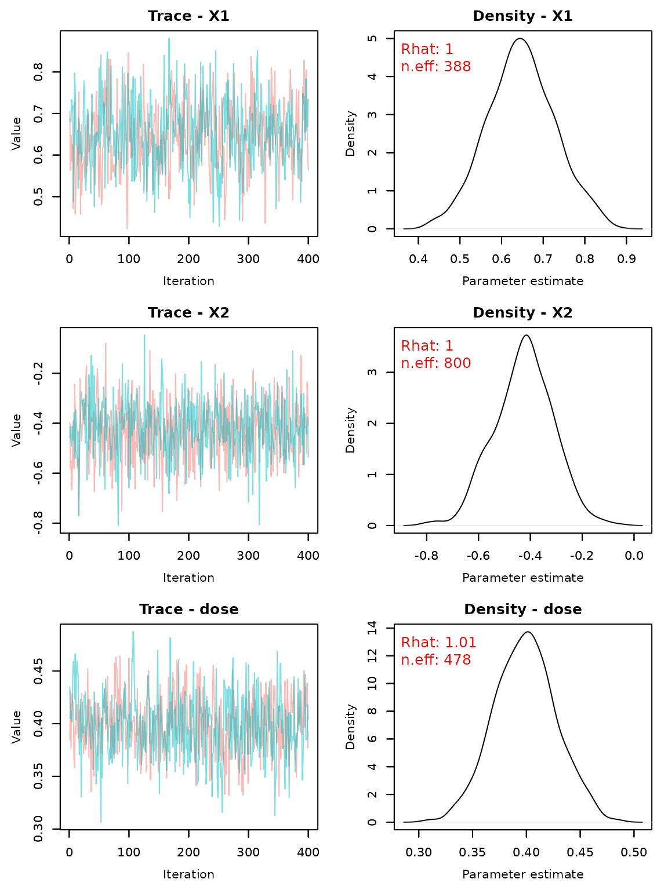
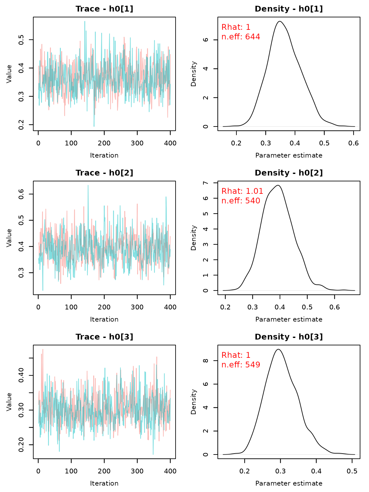
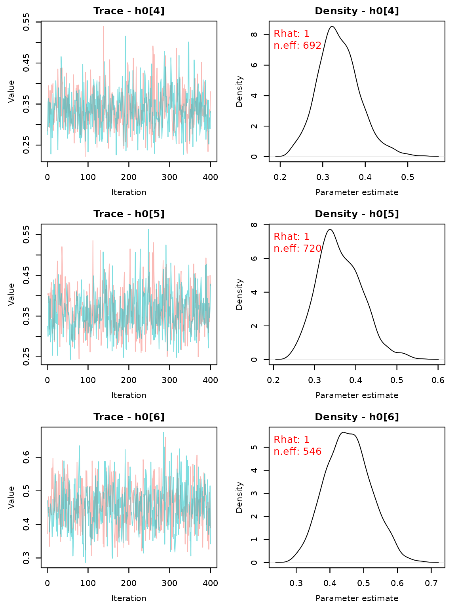

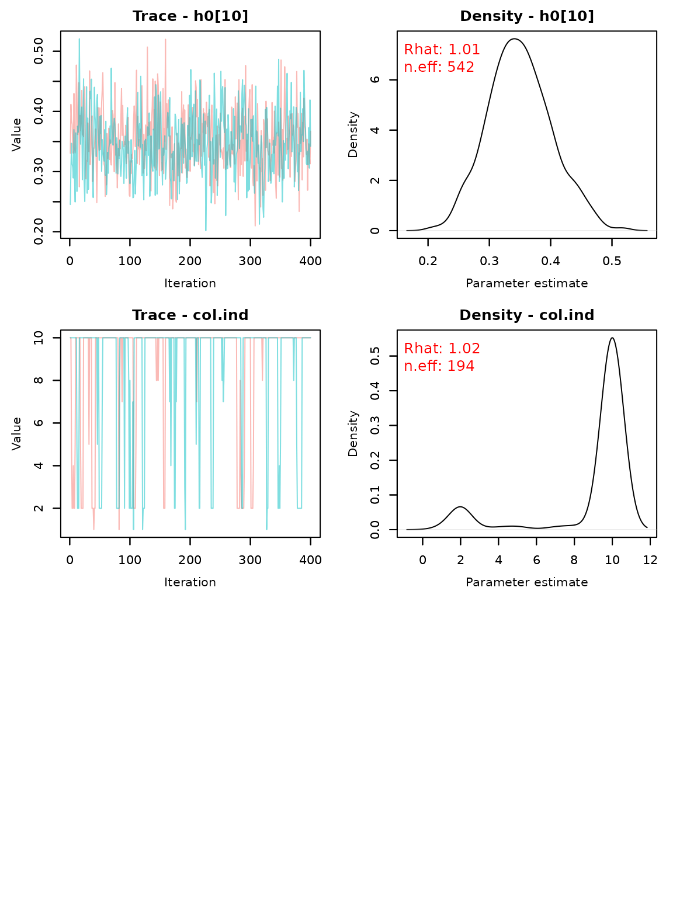
Multinomial logistic regression
For multinomial logistic regression, the last category (in the case
of the example data, Y.multinomial='3') is used as the
referent category.
Again, we first fit models including a quadratic exposure term by
setting deg=2.
set.seed(33)
fit.ameras.multinomial <- ameras(Y.multinomial~
dose(V1:V10, deg=2, model="EXP")+X1+X2,
data=data, family="multinomial",
methods=c("RC", "ERC", "MCML", "FMA", "BMA"),
niter.BMA = 5000, nburnin.BMA = 1000)
#> Note: BMA may require extensive computation time
#> Fitting RC
#> Fitting ERC
#> Fitting MCML
#> Fitting FMA
#> Fitting BMA
#> Defining model
#> Building model
#> Setting data and initial values
#> Running calculate on model
#> [Note] Any error reports that follow may simply reflect missing values in model variables.
#> Checking model sizes and dimensions
#> [Note] This model is not fully initialized. This is not an error.
#> To see which variables are not initialized, use model$initializeInfo().
#> For more information on model initialization, see help(modelInitialization).
#> Compiling
#> [Note] This may take a minute.
#> [Note] Use 'showCompilerOutput = TRUE' to see C++ compilation details.
#> Compiling
#> [Note] This may take a minute.
#> [Note] Use 'showCompilerOutput = TRUE' to see C++ compilation details.
#> running chain 1...
#> |-------------|-------------|-------------|-------------|
#> |-------------------------------------------------------|
#> running chain 2...
#> |-------------|-------------|-------------|-------------|
#> |-------------------------------------------------------|
summary(fit.ameras.multinomial)
#> Call:
#> ameras(formula = Y.multinomial ~ dose(V1:V10, deg = 2, model = "EXP") +
#> X1 + X2, data = data, family = "multinomial", methods = c("RC",
#> "ERC", "MCML", "FMA", "BMA"), nburnin.BMA = 1000, niter.BMA = 5000)
#>
#> Total run time: 466.9 seconds
#>
#> Runtime in seconds by method:
#>
#> Method Runtime
#> RC 1.1
#> ERC 178.5
#> MCML 7.9
#> FMA 10.2
#> BMA 269.2
#>
#> Summary of coefficients by method:
#>
#> Method Term Estimate SE Rhat n.eff
#> RC (1)_(Intercept) -1.134879 0.11395 NA NA
#> RC (1)_X1 0.521885 0.10631 NA NA
#> RC (1)_X2 -0.347821 0.14935 NA NA
#> RC (1)_dose 0.541114 0.13250 NA NA
#> RC (1)_dose_squared -0.028978 0.03377 NA NA
#> RC (2)_(Intercept) -0.007547 0.08795 NA NA
#> RC (2)_X1 -0.513675 0.08620 NA NA
#> RC (2)_X2 0.705782 0.10738 NA NA
#> RC (2)_dose 0.555006 0.11504 NA NA
#> RC (2)_dose_squared -0.037842 0.03053 NA NA
#> ERC (1)_(Intercept) -1.139984 0.11278 NA NA
#> ERC (1)_X1 0.524098 0.10651 NA NA
#> ERC (1)_X2 -0.351142 0.14952 NA NA
#> ERC (1)_dose 0.561788 0.12424 NA NA
#> ERC (1)_dose_squared -0.031891 0.02990 NA NA
#> ERC (2)_(Intercept) -0.008660 0.08626 NA NA
#> ERC (2)_X1 -0.511536 0.08638 NA NA
#> ERC (2)_X2 0.703688 0.10757 NA NA
#> ERC (2)_dose 0.563142 0.10587 NA NA
#> ERC (2)_dose_squared -0.036409 0.02606 NA NA
#> MCML (1)_(Intercept) -1.121541 0.11214 NA NA
#> MCML (1)_X1 0.522503 0.10638 NA NA
#> MCML (1)_X2 -0.349944 0.14943 NA NA
#> MCML (1)_dose 0.526846 0.12549 NA NA
#> MCML (1)_dose_squared -0.027194 0.03020 NA NA
#> MCML (2)_(Intercept) -0.001584 0.08614 NA NA
#> MCML (2)_X1 -0.513787 0.08621 NA NA
#> MCML (2)_X2 0.703779 0.10746 NA NA
#> MCML (2)_dose 0.559807 0.10680 NA NA
#> MCML (2)_dose_squared -0.041118 0.02628 NA NA
#> FMA (1)_(Intercept) -1.125692 0.11269 NA NA
#> FMA (1)_X1 0.522203 0.10653 NA NA
#> FMA (1)_X2 -0.349524 0.14951 NA NA
#> FMA (1)_dose 0.536663 0.12823 NA NA
#> FMA (1)_dose_squared -0.030264 0.03136 NA NA
#> FMA (2)_(Intercept) -0.001039 0.08607 NA NA
#> FMA (2)_X1 -0.513380 0.08602 NA NA
#> FMA (2)_X2 0.704601 0.10763 NA NA
#> FMA (2)_dose 0.557269 0.10747 NA NA
#> FMA (2)_dose_squared -0.040745 0.02652 NA NA
#> BMA (1)_(Intercept) -1.120533 0.11510 1.02 173.00
#> BMA (1)_X1 0.518102 0.11473 1.00 330.00
#> BMA (1)_X2 -0.342415 0.14116 1.01 663.00
#> BMA (1)_dose 0.522811 0.12793 1.04 73.00
#> BMA (1)_dose_squared -0.024286 0.03270 1.01 73.00
#> BMA (2)_(Intercept) 0.003372 0.09478 1.00 101.00
#> BMA (2)_X1 -0.522597 0.08709 1.00 364.00
#> BMA (2)_X2 0.708877 0.10811 1.00 462.00
#> BMA (2)_dose 0.554817 0.12798 1.01 47.00
#> BMA (2)_dose_squared -0.037946 0.03326 1.01 45.00
#>
#> Note: confidence intervals not yet computed. Use confint() to add them.
coef(fit.ameras.multinomial)
#> RC ERC MCML FMA
#> (1)_(Intercept) -1.134879146 -1.139983536 -1.12154130 -1.125692410
#> (1)_X1 0.521885281 0.524097727 0.52250322 0.522202730
#> (1)_X2 -0.347820786 -0.351142280 -0.34994376 -0.349524397
#> (1)_dose 0.541114276 0.561787528 0.52684585 0.536663279
#> (1)_dose_squared -0.028978278 -0.031891085 -0.02719420 -0.030263819
#> (2)_(Intercept) -0.007546883 -0.008659617 -0.00158420 -0.001039462
#> (2)_X1 -0.513675252 -0.511536376 -0.51378683 -0.513379776
#> (2)_X2 0.705781705 0.703687594 0.70377938 0.704600522
#> (2)_dose 0.555005580 0.563142229 0.55980729 0.557268591
#> (2)_dose_squared -0.037841810 -0.036408828 -0.04111845 -0.040744704
#> BMA
#> (1)_(Intercept) -1.120532838
#> (1)_X1 0.518102027
#> (1)_X2 -0.342415237
#> (1)_dose 0.522811057
#> (1)_dose_squared -0.024285677
#> (2)_(Intercept) 0.003371856
#> (2)_X1 -0.522596807
#> (2)_X2 0.708876654
#> (2)_dose 0.554817132
#> (2)_dose_squared -0.037945537
traceplot(fit.ameras.multinomial)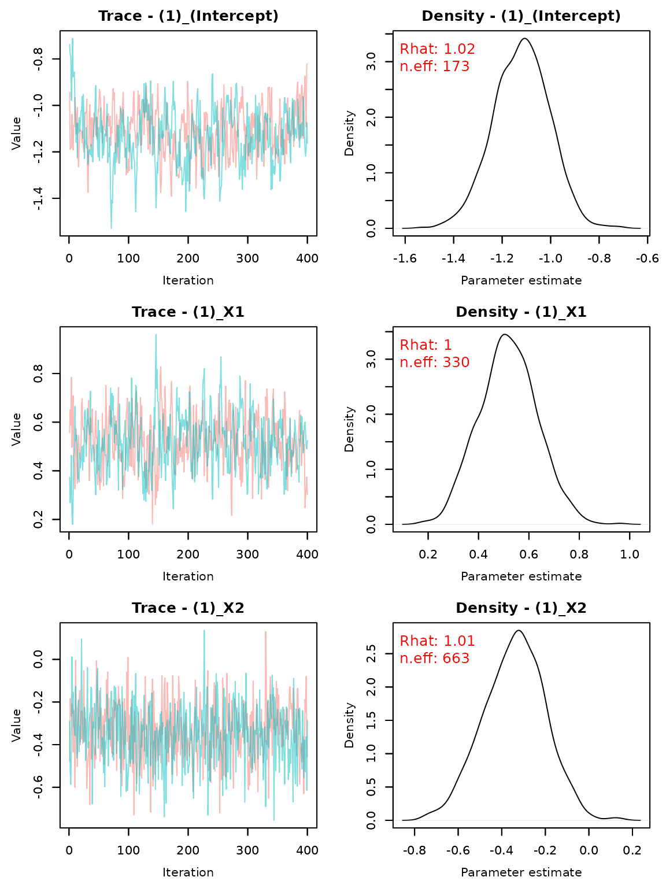
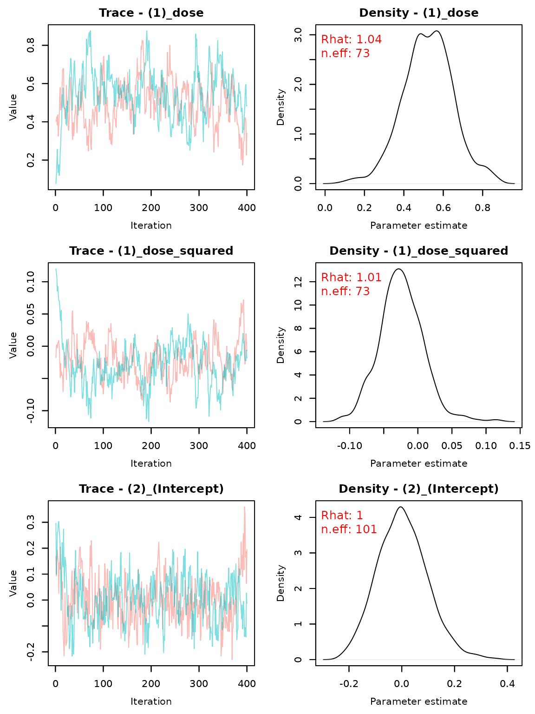


Without the quadratic term (deg=1):
set.seed(44)
fit.ameras.multinomial.lin <- ameras(Y.multinomial~
dose(V1:V10, deg=1, model="EXP")+X1+X2,
data=data, family="multinomial",
methods=c("RC", "ERC", "MCML", "FMA", "BMA"),
niter.BMA = 5000, nburnin.BMA = 1000)
#> Note: BMA may require extensive computation time
#> Fitting RC
#> Fitting ERC
#> Fitting MCML
#> Fitting FMA
#> Fitting BMA
#> Defining model
#> Building model
#> Setting data and initial values
#> Running calculate on model
#> [Note] Any error reports that follow may simply reflect missing values in model variables.
#> Checking model sizes and dimensions
#> [Note] This model is not fully initialized. This is not an error.
#> To see which variables are not initialized, use model$initializeInfo().
#> For more information on model initialization, see help(modelInitialization).
#> Compiling
#> [Note] This may take a minute.
#> [Note] Use 'showCompilerOutput = TRUE' to see C++ compilation details.
#> Compiling
#> [Note] This may take a minute.
#> [Note] Use 'showCompilerOutput = TRUE' to see C++ compilation details.
#> running chain 1...
#> |-------------|-------------|-------------|-------------|
#> |-------------------------------------------------------|
#> running chain 2...
#> |-------------|-------------|-------------|-------------|
#> |-------------------------------------------------------|
summary(fit.ameras.multinomial.lin)
#> Call:
#> ameras(formula = Y.multinomial ~ dose(V1:V10, deg = 1, model = "EXP") +
#> X1 + X2, data = data, family = "multinomial", methods = c("RC",
#> "ERC", "MCML", "FMA", "BMA"), nburnin.BMA = 1000, niter.BMA = 5000)
#>
#> Total run time: 367 seconds
#>
#> Runtime in seconds by method:
#>
#> Method Runtime
#> RC 0.8
#> ERC 124.5
#> MCML 6.1
#> FMA 7.8
#> BMA 227.8
#>
#> Summary of coefficients by method:
#>
#> Method Term Estimate SE Rhat n.eff
#> RC (1)_(Intercept) -1.10156 0.10093 NA NA
#> RC (1)_X1 0.52203 0.10628 NA NA
#> RC (1)_X2 -0.34710 0.14929 NA NA
#> RC (1)_dose 0.45264 0.05805 NA NA
#> RC (2)_(Intercept) 0.04417 0.07667 NA NA
#> RC (2)_X1 -0.51312 0.08614 NA NA
#> RC (2)_X2 0.70793 0.10728 NA NA
#> RC (2)_dose 0.43049 0.05170 NA NA
#> ERC (1)_(Intercept) -1.10285 0.10195 NA NA
#> ERC (1)_X1 0.52577 0.10650 NA NA
#> ERC (1)_X2 -0.35176 0.14953 NA NA
#> ERC (1)_dose 0.46441 0.06099 NA NA
#> ERC (2)_(Intercept) 0.03947 0.07756 NA NA
#> ERC (2)_X1 -0.51003 0.08634 NA NA
#> ERC (2)_X2 0.70435 0.10749 NA NA
#> ERC (2)_dose 0.44543 0.05364 NA NA
#> MCML (1)_(Intercept) -1.09147 0.10115 NA NA
#> MCML (1)_X1 0.52239 0.10633 NA NA
#> MCML (1)_X2 -0.34934 0.14941 NA NA
#> MCML (1)_dose 0.44410 0.05912 NA NA
#> MCML (2)_(Intercept) 0.05917 0.07624 NA NA
#> MCML (2)_X1 -0.51290 0.08614 NA NA
#> MCML (2)_X2 0.70604 0.10735 NA NA
#> MCML (2)_dose 0.41753 0.05156 NA NA
#> FMA (1)_(Intercept) -1.09114 0.10101 NA NA
#> FMA (1)_X1 0.52245 0.10612 NA NA
#> FMA (1)_X2 -0.34937 0.14960 NA NA
#> FMA (1)_dose 0.44381 0.05893 NA NA
#> FMA (2)_(Intercept) 0.05869 0.07627 NA NA
#> FMA (2)_X1 -0.51272 0.08608 NA NA
#> FMA (2)_X2 0.70611 0.10708 NA NA
#> FMA (2)_dose 0.41769 0.05137 NA NA
#> BMA (1)_(Intercept) -1.09319 0.09280 1.00 245.00
#> BMA (1)_X1 0.52119 0.10307 1.02 390.00
#> BMA (1)_X2 -0.34994 0.15277 1.01 447.00
#> BMA (1)_dose 0.44801 0.05670 1.00 254.00
#> BMA (2)_(Intercept) 0.05267 0.07548 1.00 324.00
#> BMA (2)_X1 -0.51037 0.08339 1.01 373.00
#> BMA (2)_X2 0.70371 0.11185 1.01 650.00
#> BMA (2)_dose 0.42386 0.05084 1.00 313.00
#>
#> Note: confidence intervals not yet computed. Use confint() to add them.
coef(fit.ameras.multinomial.lin)
#> RC ERC MCML FMA BMA
#> (1)_(Intercept) -1.10156112 -1.10285018 -1.09147154 -1.09114142 -1.09318983
#> (1)_X1 0.52203186 0.52577389 0.52239330 0.52245186 0.52118788
#> (1)_X2 -0.34709866 -0.35175606 -0.34933932 -0.34937267 -0.34993934
#> (1)_dose 0.45263847 0.46441427 0.44410129 0.44380519 0.44801466
#> (2)_(Intercept) 0.04416972 0.03946571 0.05916562 0.05869433 0.05266985
#> (2)_X1 -0.51311892 -0.51003494 -0.51290413 -0.51271584 -0.51036888
#> (2)_X2 0.70793136 0.70434790 0.70604308 0.70611143 0.70370686
#> (2)_dose 0.43049029 0.44543353 0.41753398 0.41768779 0.42386430
traceplot(fit.ameras.multinomial.lin)

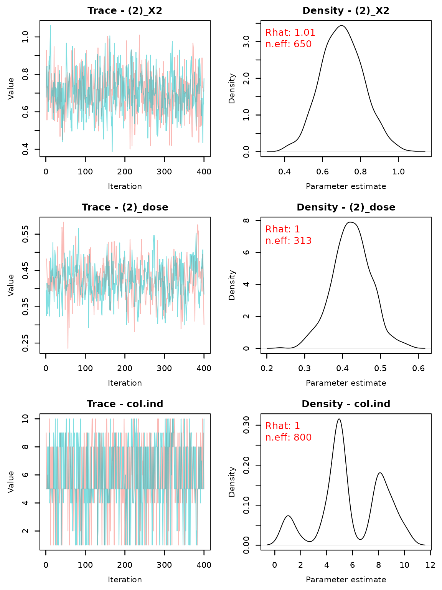
Conditional logistic regression
For conditional logistic regression, the set number variable is
specified through a strata term in the formula. Again, we
first fit models including a quadratic exposure term by setting
deg=2.
set.seed(3301)
fit.ameras.clogit <- ameras(Y.clogit~dose(V1:V10, deg=2, model="EXP")+X1+X2+
strata(setnr), data=data, family="clogit",
methods=c("RC", "ERC", "MCML", "FMA", "BMA"),
niter.BMA = 5000, nburnin.BMA = 1000)
#> Note: BMA may require extensive computation time
#> Fitting RC
#> Fitting ERC
#> Fitting MCML
#> Fitting FMA
#> Fitting BMA
#> Defining model
#> Building model
#> Setting data and initial values
#> Running calculate on model
#> [Note] Any error reports that follow may simply reflect missing values in model variables.
#> Checking model sizes and dimensions
#> [Note] This model is not fully initialized. This is not an error.
#> To see which variables are not initialized, use model$initializeInfo().
#> For more information on model initialization, see help(modelInitialization).
#> Compiling
#> [Note] This may take a minute.
#> [Note] Use 'showCompilerOutput = TRUE' to see C++ compilation details.
#> Compiling
#> [Note] This may take a minute.
#> [Note] Use 'showCompilerOutput = TRUE' to see C++ compilation details.
#> running chain 1...
#> |-------------|-------------|-------------|-------------|
#> |-------------------------------------------------------|
#> running chain 2...
#> |-------------|-------------|-------------|-------------|
#> |-------------------------------------------------------|
summary(fit.ameras.clogit)
#> Call:
#> ameras(formula = Y.clogit ~ dose(V1:V10, deg = 2, model = "EXP") +
#> X1 + X2 + strata(setnr), data = data, family = "clogit",
#> methods = c("RC", "ERC", "MCML", "FMA", "BMA"), nburnin.BMA = 1000,
#> niter.BMA = 5000)
#>
#> Total run time: 828.4 seconds
#>
#> Runtime in seconds by method:
#>
#> Method Runtime
#> RC 0.7
#> ERC 749.5
#> MCML 2.2
#> FMA 8.1
#> BMA 67.9
#>
#> Summary of coefficients by method:
#>
#> Method Term Estimate SE Rhat n.eff
#> RC X1 0.54553 0.08896 NA NA
#> RC X2 -0.53392 0.11711 NA NA
#> RC dose 0.68029 0.10131 NA NA
#> RC dose_squared -0.05146 0.02242 NA NA
#> ERC X1 0.61917 0.09205 NA NA
#> ERC X2 -0.51784 0.11993 NA NA
#> ERC dose 0.35155 0.08030 NA NA
#> ERC dose_squared 0.03687 0.01013 NA NA
#> MCML X1 0.55083 0.08923 NA NA
#> MCML X2 -0.53547 0.11712 NA NA
#> MCML dose 0.69334 0.09315 NA NA
#> MCML dose_squared -0.05581 0.01950 NA NA
#> FMA X1 0.55052 0.08917 NA NA
#> FMA X2 -0.53471 0.11713 NA NA
#> FMA dose 0.69461 0.09617 NA NA
#> FMA dose_squared -0.05610 0.02045 NA NA
#> BMA X1 0.54909 0.09212 1.00 800.00
#> BMA X2 -0.53845 0.12233 1.00 800.00
#> BMA dose 0.70058 0.10236 1.00 154.00
#> BMA dose_squared -0.05764 0.02212 1.00 131.00
#>
#> Note: confidence intervals not yet computed. Use confint() to add them.
coef(fit.ameras.clogit)
#> RC ERC MCML FMA BMA
#> X1 0.54552627 0.61917374 0.55082666 0.55052070 0.54908986
#> X2 -0.53391889 -0.51784345 -0.53546549 -0.53471237 -0.53844738
#> dose 0.68029437 0.35155174 0.69333718 0.69461086 0.70058151
#> dose_squared -0.05145934 0.03687427 -0.05581249 -0.05609925 -0.05764133
traceplot(fit.ameras.clogit)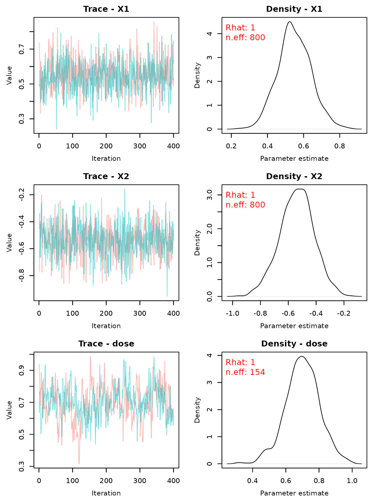
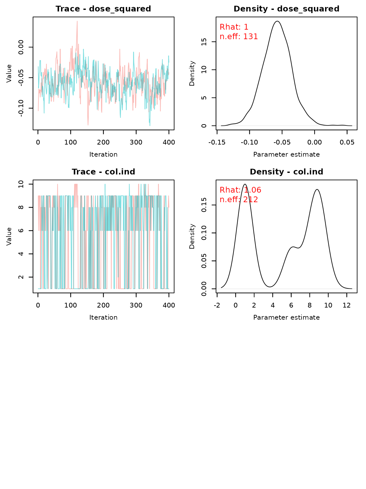
Without the quadratic term (deg=1):
set.seed(4401)
fit.ameras.clogit.lin <- ameras(Y.clogit~dose(V1:V10, deg=2, model="EXP")+X1+X2+
strata(setnr), data=data, family="clogit",
methods=c("RC", "ERC", "MCML", "FMA", "BMA"),
niter.BMA = 5000, nburnin.BMA = 1000)
#> Note: BMA may require extensive computation time
#> Fitting RC
#> Fitting ERC
#> Fitting MCML
#> Fitting FMA
#> Fitting BMA
#> Defining model
#> Building model
#> Setting data and initial values
#> Running calculate on model
#> [Note] Any error reports that follow may simply reflect missing values in model variables.
#> Checking model sizes and dimensions
#> [Note] This model is not fully initialized. This is not an error.
#> To see which variables are not initialized, use model$initializeInfo().
#> For more information on model initialization, see help(modelInitialization).
#> Compiling
#> [Note] This may take a minute.
#> [Note] Use 'showCompilerOutput = TRUE' to see C++ compilation details.
#> Compiling
#> [Note] This may take a minute.
#> [Note] Use 'showCompilerOutput = TRUE' to see C++ compilation details.
#> running chain 1...
#> |-------------|-------------|-------------|-------------|
#> |-------------------------------------------------------|
#> running chain 2...
#> |-------------|-------------|-------------|-------------|
#> |-------------------------------------------------------|
summary(fit.ameras.clogit.lin)
#> Call:
#> ameras(formula = Y.clogit ~ dose(V1:V10, deg = 2, model = "EXP") +
#> X1 + X2 + strata(setnr), data = data, family = "clogit",
#> methods = c("RC", "ERC", "MCML", "FMA", "BMA"), nburnin.BMA = 1000,
#> niter.BMA = 5000)
#>
#> Total run time: 873.2 seconds
#>
#> Runtime in seconds by method:
#>
#> Method Runtime
#> RC 0.7
#> ERC 795.6
#> MCML 2.3
#> FMA 8.4
#> BMA 66.2
#>
#> Summary of coefficients by method:
#>
#> Method Term Estimate SE Rhat n.eff
#> RC X1 0.54553 0.08896 NA NA
#> RC X2 -0.53392 0.11711 NA NA
#> RC dose 0.68029 0.10131 NA NA
#> RC dose_squared -0.05146 0.02242 NA NA
#> ERC X1 0.61917 0.09205 NA NA
#> ERC X2 -0.51784 0.11993 NA NA
#> ERC dose 0.35155 0.08030 NA NA
#> ERC dose_squared 0.03687 0.01013 NA NA
#> MCML X1 0.55083 0.08923 NA NA
#> MCML X2 -0.53547 0.11712 NA NA
#> MCML dose 0.69334 0.09315 NA NA
#> MCML dose_squared -0.05581 0.01950 NA NA
#> FMA X1 0.55012 0.08918 NA NA
#> FMA X2 -0.53457 0.11734 NA NA
#> FMA dose 0.69435 0.09622 NA NA
#> FMA dose_squared -0.05607 0.02043 NA NA
#> BMA X1 0.55628 0.09059 1.00 800.00
#> BMA X2 -0.53885 0.11829 1.00 776.00
#> BMA dose 0.69524 0.09738 1.01 191.00
#> BMA dose_squared -0.05604 0.02093 1.01 159.00
#>
#> Note: confidence intervals not yet computed. Use confint() to add them.
coef(fit.ameras.clogit.lin)
#> RC ERC MCML FMA BMA
#> X1 0.54552627 0.61917374 0.55082666 0.55011963 0.55627823
#> X2 -0.53391889 -0.51784345 -0.53546549 -0.53456800 -0.53884618
#> dose 0.68029437 0.35155174 0.69333718 0.69435478 0.69524184
#> dose_squared -0.05145934 0.03687427 -0.05581249 -0.05606825 -0.05604098
traceplot(fit.ameras.clogit.lin)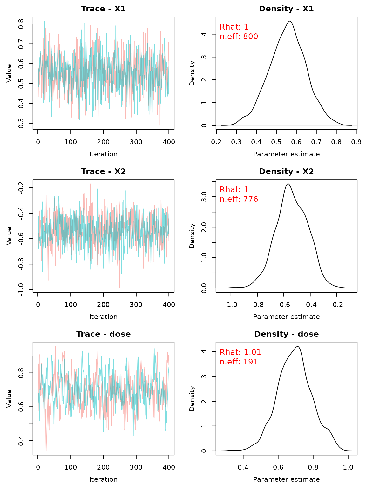
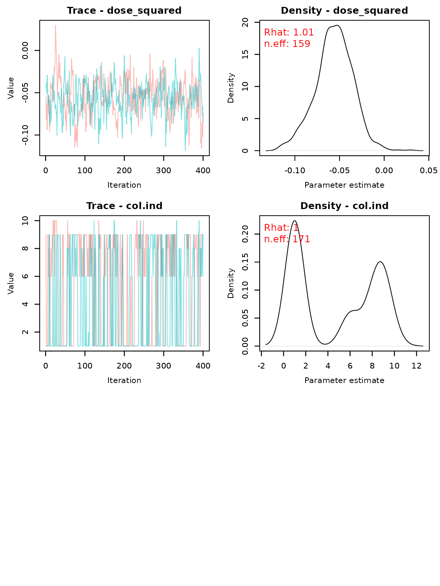